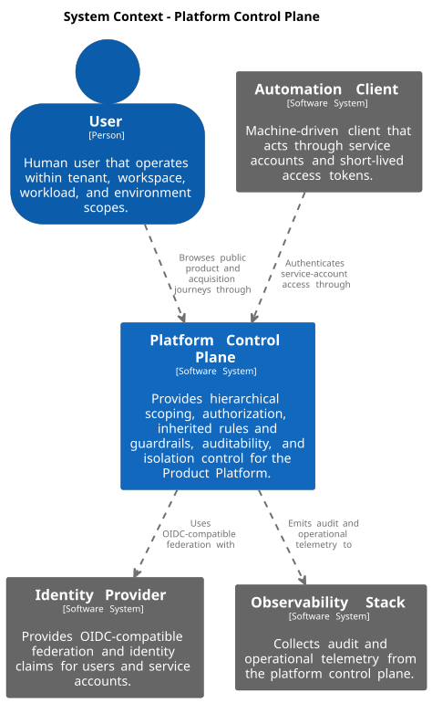
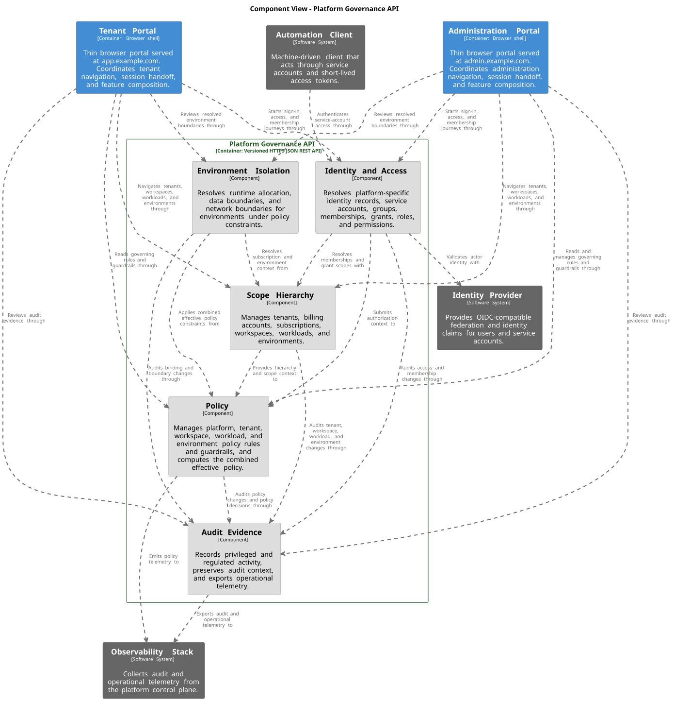
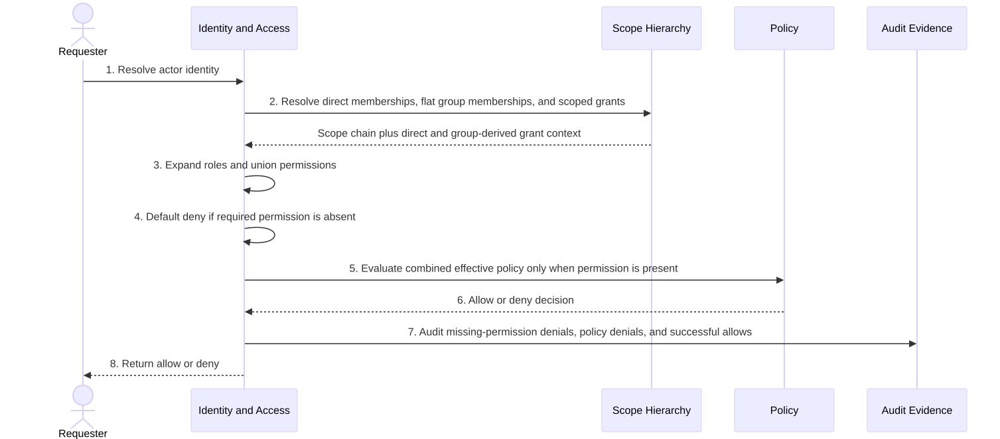

Product Platform architecture documentation with arc42, C4 model, and documentation as code.
1. Introduction and Goals
This section summarizes the architectural drivers for the Platform Control Plane inside the broader Product Platform. It focuses on the hierarchical platform model, the governance and authorization capabilities that must be shared across all tenants, and the quality goals that drive the resulting design.
1.1. Requirements Overview
1.1.1. Problem and Goal
The Product Platform is expected to consist of a Platform Control Plane and a Workload Plane. The Platform Control Plane provides the shared governance architecture, including identity and access, inherited rules and guardrails, auditability, hierarchical scope management, and tenant isolation. It treats Platform → Tenant → Workspace → Workload → Environment as the shared business hierarchy that governs workloads in the Workload Plane.
1.1.2. Business Goals
The platform control plane should help the organization:
-
manage users and service accounts consistently across all scopes
-
apply one hierarchical governance model to shared, silo, and hybrid tenants
-
separate authorization, policy, and audit concerns without losing traceability
-
support subscription plans without coupling pricing directly to hosting isolation
-
make privileged and regulated activity auditable across the full hierarchy
-
allow stricter controls at lower scopes without weakening mandatory parent controls
1.1.3. Requirement Clusters
| Cluster | Description |
|---|---|
Identity and access foundation |
Provide users, service accounts, groups, memberships, grants, roles, permissions, and scoped access decisions for tenant, workspace, workload, and environment boundaries. |
Hierarchical scope governance |
Manage the shared hierarchy of tenant, workspace, workload, and environment, including inherited defaults, audit context, and scope-aware access. |
Policy and audit baseline |
Maintain a platform policy baseline plus tenant, workspace, workload, and environment policies, and audit privileged or regulated activity across all scopes. |
Isolation and placement |
Support shared, silo, and hybrid isolation without changing the business hierarchy by resolving runtime, data, and network boundaries from subscription and isolation information. |
1.1.4. Core Tasks and Capabilities
The architecture is primarily expected to support the following tasks:
-
authenticate a user or service account and resolve actor identity
-
resolve memberships and scoped grants for tenant, workspace, workload, and environment boundaries
-
expand roles into fine-grained permissions for the requested action
-
evaluate the combined effective policy after permission lookup and before access is allowed
-
record privileged changes, secret access, production access, deployments, and billing or administration changes in the correct audit context
-
resolve runtime, data, and network isolation from the subscription’s subscription plan and isolation profile
1.1.5. Requirement Sources
The repository does not contain linked external requirements or backlog exports. This chapter therefore uses local architecture evidence and explicit source-reference slots:
| Reference ID | Source | Status / Notes |
|---|---|---|
REQ-SRC-001 |
External product or platform requirements specification |
Not yet linked in this repository. Reserve this slot for an approved requirements source. |
REQ-SRC-002 |
External backlog or work-item system |
Not yet linked in this repository. Reserve this slot for stable epic, feature, or story references. |
REQ-EVID-001 |
|
Current repo evidence for the Platform Control Plane context and capability-module decomposition. |
REQ-EVID-002 |
This arc42 book |
Current source of truth for the hierarchical domain model, policy model, audit model, and isolation model. |
1.2. Quality Goals
The top quality goals for this architecture are intentionally limited to five. Section 4 summarizes the strategic responses and Section 10 contains the fuller quality model and scenarios.
| Priority | Quality Goal | Scenario |
|---|---|---|
1 |
Security and Least Privilege |
When a user or service account requests a privileged action, the platform should resolve only the permissions granted at the relevant scope and deny any action that is not explicitly allowed. |
2 |
Policy Enforceability |
When a child scope defines a local rule, the platform should apply inherited parent policy and allow the child to tighten controls without weakening mandatory parent requirements. |
3 |
Auditability and Traceability |
When a privileged or regulated action occurs, the platform should record it with the correct scope, actor, decision context, and resulting effect. |
4 |
Isolation Flexibility |
When two tenants use different hosting models, they should keep the same business hierarchy while the platform resolves different runtime, data, and network boundaries for shared, silo, or hybrid isolation. |
5 |
Evolvability |
When the platform adds a new governed capability or stricter control, it should extend the existing hierarchy, policy, and authorization model instead of introducing a separate parallel model. |
Operability remains important, but it is treated as a detailed quality requirement in Section 10 rather than a top-five introductory goal.
1.3. Stakeholders
| Role | Expectation |
|---|---|
Platform Administrator |
Needs clear rules for platform baseline policy, scope hierarchy, audit coverage, and isolation behavior across all tenants. |
Security and Compliance Stakeholder |
Needs assurance that least privilege, inherited rules and guardrails, audit logging, retention, and regulated access controls are built into the platform model. |
Product Engineer |
Needs a shared authorization, policy, and hierarchy model that can be reused consistently when new services and environments are introduced. |
Software Architect |
Needs a clear and extensible foundation model for scopes, inheritance, isolation, and governance so future capabilities do not fragment the platform. |
Product Owner |
Needs a compact explanation of why the platform uses one hierarchy for all tenants, how subscription plans differ from isolation, and how governance requirements shape the architecture. |
2. Architecture Constraints
The following constraints are fixed by the chosen Platform Control Plane model and by the documentation/tooling approach used in this repository.
| Category | Constraint | Consequence for the Architecture |
|---|---|---|
Core domain structure |
The shared hierarchy is |
All access, policy, audit, inheritance, defaults, and isolation reasoning must follow this hierarchy rather than introducing a second parallel business structure. |
Authorization model |
Access must follow |
Roles remain reusable bundles, permissions remain the smallest action unit, and grants must always be scoped to tenant, workspace, workload, or environment. |
Actor and group model |
The supported access actors are user and service account, while groups remain a separate access-management concept. |
Human and machine access must be represented consistently, while group membership provides aggregation without replacing scoped grants. |
Policy model |
Policy is distinct from authorization and applies inherited rules downward from platform baseline to tenant, workspace, workload, and environment policies. |
Permission lookup happens before policy evaluation, and lower scopes may tighten controls but must not weaken mandatory parent rules. |
Isolation model |
Shared, silo, and hybrid tenants must keep the same business hierarchy. |
Isolation differences are expressed through isolation profile plus runtime, data, and network boundaries, not through a second tenant model. |
Commercial model |
Subscription plan and isolation profile are separate concepts. |
Pricing and entitlement may influence isolation choices, but they cannot be treated as the same field or the same architectural concern. |
Audit model |
Privileged and regulated actions must be auditable at the correct scope. |
Membership changes, grants, policy changes, production access, secret access, deployments, and billing or administration changes must preserve actor and scope context. |
Documentation and generation |
The repository standardizes on AsciiDoc, arc42, docToolchain, Structurizr DSL, and generated ADR includes. |
arc42 chapters must stay maintained in AsciiDoc, C4 diagrams must come from |
3. Context and Scope
3.1. Business Context

The system boundary in this repository is the Platform Control Plane. It provides the shared governance architecture for the broader Product Platform, while the future Workload Plane will host the tenant-facing runtime workloads governed by these decisions.
| Communication Partner | Inputs to the Platform Control Plane | Outputs from the Platform Control Plane |
|---|---|---|
User |
Human-initiated access, administration actions, membership changes, grant requests, policy changes, and scoped operational actions. |
Authorization decisions, hierarchy-aware access, policy-enforced outcomes, and scope-specific audit context. |
Automation Client |
Machine-initiated access through service accounts, including deployment and operational automation. |
Service-account authorization decisions, scoped access to workloads and environments, and audited machine activity. |
Identity Provider |
Identity claims and authentication results for users and service accounts. |
Authentication and identity-validation requests from the Platform Control Plane. |
Observability Stack |
No direct business command input is modeled. |
Audit and operational telemetry emitted by the Platform Control Plane. |
3.2. Technical Context
The technical context maps the same communication partners to technical interfaces and channels. Inside the Platform Control Plane boundary, the user-facing runtime containers separate public marketing, tenant work, platform administration, and sign-in into distinct browser surfaces. Those browser containers use one shared public Platform Governance API, while external automation clients use the same API directly.
| Partner | Interface / Channel | Purpose | Notes |
|---|---|---|---|
User |
In-scope browser containers, with sign-in handoff |
Initiate scope administration, access changes, policy changes, and governed operations. |
User journeys enter through the in-scope browser containers at |
Automation Client |
Versioned HTTPS JSON REST API |
Initiate machine-to-platform calls for governed workload and environment actions. |
Automation uses the same approved public API model defined in ADR 0008 without going through the browser containers. |
Identity Provider |
Authentication and identity-claims integration |
Validate actor identity and return claims used during authorization and policy evaluation. |
User sign-in uses external OIDC-compatible federation, while service-account automation uses short-lived token-based trust. |
Observability Stack |
Telemetry export channel |
Receive audit and operational signals for monitoring, troubleshooting, and governance evidence. |
The architecture proves telemetry export, but not a concrete telemetry protocol or product choice. |
Within the system boundary, the marketing site, tenant portal, administration portal, and sign-in portal are separate runtime containers with distinct user-facing responsibilities. Shared browser foundations keep sign-in, navigation, and interaction expectations coherent across those containers, as defined in ADR 0013.
ADR 0008 defines the accepted public access profile: browser-based administration through the in-scope browser surfaces and a versioned HTTPS JSON REST API used by both browser clients and automation. ADR 0009 defines the accepted trust and credential direction: external OIDC-compatible federation for users plus short-lived OAuth-style bearer tokens for service accounts. ADR 0013 defines the accepted browser-composition baseline for those surfaces.
4. Solution Strategy
This section summarizes the small number of strategic decisions that shape the Platform Control Plane architecture. The detailed structure appears in Section 5, the behavior in Section 6, and the cross-cutting rules in Section 8.
| Decision Area | Strategy | Why It Matters |
|---|---|---|
Hierarchy |
Use one shared hierarchy: platform, tenant, workspace, workload, environment. |
Keeps governance, access, inheritance, and audit consistent across the platform instead of fragmenting the model. |
Authorization |
Resolve access through actor, membership, grant, role, permission, and scope. |
Separates identity, scope membership, and reusable permission bundles while supporting fine-grained access control. |
Policy |
Treat policy as distinct from authorization and evaluate it after permission lookup. |
Allows mandatory controls, approval requirements, retention rules, trusted-network requirements, and regional restrictions to be enforced consistently. |
Isolation |
Keep the same business hierarchy for all tenants and express hosting differences through isolation profile plus runtime, data, and network boundaries. |
Supports shared, silo, and hybrid operation without inventing separate business models for different hosting choices. |
Audit evidence |
Make audit context a first-class concern across memberships, grants, policy changes, production access, secrets, deployments, and billing or administration changes. |
Supports compliance, traceability, and operational review across the entire hierarchy. |
Browser applications |
Use a dedicated marketing site, tenant portal, administration portal, and sign-in portal; keep the tenant and administration portals thin and load business features from remotes. |
Separates distinct browser journeys while still scaling frontend work across teams through remotes, shared browser foundations, and clear portal responsibilities. |
Commercial model |
Separate subscription plan from isolation profile. |
Prevents pricing concerns from being confused with the technical isolation model. |
5. Building Block View
5.1. Whitebox Overall System: Platform Control Plane

The Platform Control Plane is decomposed into user-facing runtime containers plus a shared Platform Governance API container. Inside that API container, the backend is organized into five capability-oriented logical building blocks. Browser-facing marketing, tenant, admin, and sign-in experiences sit around those backend building blocks, but the control plane itself remains centered on identity and access, policy, scope hierarchy, audit evidence, and environment isolation without changing the business hierarchy seen by tenants and internal teams.
- Motivation
-
The decomposition keeps runtime boundaries and logical building blocks distinct. Browser applications and the Platform Governance API are the C4 runtime containers, while the backend governance responsibilities remain explicit as internal building blocks instead of being misrepresented as separately deployable services.
- Modeling note
-
The five backend areas below are logical building blocks modeled as internal components of the Platform Governance API container in the C4 workspace. They are not presented here as proven separately deployable containers.
- Contained Building Blocks
| Building Block | Responsibility |
|---|---|
Identity and Access |
Authoritatively owns platform-specific identity records, service accounts, groups, memberships, grants, roles, and permissions, and resolves the authorization context for a requested action. |
Policy |
Authoritatively owns platform baseline rules and scoped tenant, workspace, workload, and environment policy rules, and computes the combined effective policy. |
Scope Hierarchy |
Authoritatively owns tenants, billing accounts, subscriptions, workspaces, workloads, and environments as the shared scope hierarchy. |
Audit Evidence |
Owns official audit evidence, preserves scope and decision context, enforces governance-oriented audit behavior, and exports operational telemetry as a secondary concern. |
Environment Isolation |
Authoritatively owns resolved runtime allocations, data boundaries, network boundaries, and placement state for each environment. |
- Important Relationships
| Relationship | Description |
|---|---|
Identity and Access → Scope Hierarchy |
Memberships and grants are meaningful only when they can be resolved against the hierarchy and scope chain. Cross-capability reads may use projections, but writes to the system of record remain with the owning capability. |
Identity and Access → Policy |
The combined effective policy is evaluated after permissions are resolved and before access is allowed. |
Policy → Audit Evidence |
Policy decisions and policy changes must be preserved as official audit evidence at the correct scope. |
Environment Isolation → Scope Hierarchy |
Isolation resolution depends on subscription, workload, and environment context owned by the hierarchy capability, while resolved placement state remains owned by Environment Isolation. |
Environment Isolation → Policy |
Placement and boundary choices must respect inherited rules and guardrails such as approved regions or network restrictions. |
All capability modules → Audit Evidence |
Privileged and regulated events must preserve actor, scope, and decision context in official audit evidence, while telemetry export remains a secondary downstream concern. |
- Browser application note
-
The platform browser landscape is defined separately in Browser Application Composition Model and in ADR 0013. The tenant portal and administration portal remain thin browser hosts, the marketing site remains separate, the sign-in experience is centralized, and business-heavy browser capabilities are delivered through remotes inside the same Platform Control Plane software-system boundary.
5.2. Platform Hierarchy

| Scope Level | Purpose |
|---|---|
Platform |
Defines the global baseline for policy, governance, and shared architectural defaults. |
Tenant |
Represents the governed organizational or customer boundary, including subscription and tenant-specific policy and audit context. |
Workspace |
Groups related work within a tenant and provides a narrower boundary for membership, policy, and audit context. |
Workload |
Represents the governed delivery boundary inside a workspace, regardless of whether the implementation becomes a service, application, or job. |
Environment |
Represents the deployment-facing operational boundary where combined effective policy, audit, and isolation become most concrete. |
5.3. Actor and Access Model
| Element | Purpose |
|---|---|
User |
Human user that performs governed actions in the hierarchy. |
Service Account |
Machine identity used for automation and service-to-platform access. |
Group |
Collection of users and service accounts used to manage access at scale. |
Membership |
Association that answers who belongs to which scope or organizational context. |
Grant |
Assignment of a role at a specific scope. Grants are always scoped to tenant, workspace, workload, or environment. |
Role |
Reusable permission bundle that expresses a meaningful access profile. |
Permission |
Smallest action unit, such as |
5.4. Environment Isolation Model
| Element | Purpose |
|---|---|
Subscription Plan |
Commercial entitlement such as Standard, Premium, or Enterprise. |
Isolation Profile |
Technical isolation intent, such as Shared, Silo, or Hybrid. |
Runtime Allocation |
Resolves where an environment runs, for example shared runtime allocation or dedicated runtime allocation. |
Data Boundary |
Resolves how data is isolated, for example shared partition or dedicated store. |
Network Boundary |
Resolves the network isolation level, for example shared or dedicated network boundary. |
6. Runtime View
This section shows three representative flows that are architecturally relevant for the Platform Control Plane: authorization, inherited rules and guardrails, and environment isolation.
Across these flows, owner-managed state follows the accepted propagation pattern from ADR 0011: owner updates happen inside the owning capability boundary, the same change captures a transactional outbox entry or equivalent durable change record, and downstream projections plus cross-capability read models are updated asynchronously and can lag behind owner state.
6.1. Authorization Decision Flow

-
Resolve the requesting actor as either a user or a service account.
-
Resolve direct memberships, flat group memberships, and scoped grants for tenant, workspace, workload, and environment.
-
Expand the granted role set into fine-grained permissions and union direct and group-derived permissions.
-
Deny by default when the required permission is absent at the requested scope or any ancestor scope.
-
Evaluate the combined effective policy only after permission lookup succeeds.
-
Return an allow or deny decision and audit missing-permission denials, policy denials, and successful allows.
When a decision requires the freshest membership, grant, or policy data, the responsible flow reads from the owning capability rather than relying on a projected read model.
6.2. Inherited Rules and Effective Policy Evaluation

-
Start with the platform policy baseline.
-
Apply tenant, workspace, workload, and environment policy in hierarchy order.
-
Preserve mandatory parent controls throughout evaluation.
-
Allow lower scopes to tighten controls, such as requiring approval or restricting production access to a narrower group.
-
Use the resulting combined effective policy during authorization and execution decisions.
Derived policy-aware read models may assist downstream consumers, but Policy remains the system of record and downstream projections may lag.
6.3. Environment Isolation Resolution

-
Resolve the environment and its parent subscription context.
-
Read the subscription’s subscription plan and isolation profile as the default isolation baseline.
-
Apply any environment-level tightening that strengthens the default without weakening it.
-
Evaluate policy constraints that can affect placement, region, network, retention, or access posture.
-
Resolve runtime allocation, data boundary, and network boundary independently under one policy envelope.
-
Accept placement only when every resolved boundary complies with policy and does not weaken a stricter default.
-
Produce the effective isolation outcome for the environment without changing the business hierarchy.
Runtime and placement state are committed by the owning capability first, recorded with a durable change record, and then propagated to downstream consumers or projections through asynchronous reconciliation as needed.
7. Deployment View
The architecture defines logical isolation profiles rather than a fixed concrete infrastructure topology. This section therefore describes how environments are placed and isolated in shared, silo, and hybrid modes, while leaving concrete hosting technology intentionally open. A strict C4 deployment view is deferred until concrete deployment nodes, stores, and hosting topology are chosen.
7.1. Logical Isolation Profiles

| Isolation Profile | Runtime Allocation | Data Boundary | Network Boundary | Typical Use |
|---|---|---|---|---|
Shared |
Shared runtime allocation |
Shared partition or equivalent multi-tenant storage boundary |
Shared network boundary |
Cost-efficient default for tenants that do not require dedicated isolation. |
Hybrid |
Shared for some environments, dedicated for others |
Shared or dedicated depending on environment and policy |
Shared or dedicated depending on environment and policy |
Tenants that need stronger isolation only for selected workloads or environments, such as production. Mixed boundary combinations are valid only when they remain policy-compliant and do not weaken stricter defaults. |
Silo |
Dedicated runtime allocation |
Dedicated store |
Dedicated network boundary |
Tenants with strict isolation, regulatory, or contractual requirements. |
7.2. Deployment Assumptions and Explicit Gaps
The following deployment facts remain intentionally open in this architecture:
-
the concrete runtime platform, cluster, account, or subscription model
-
the concrete storage technologies behind shared partitions and dedicated stores
-
the concrete network technologies behind shared and dedicated network boundaries
-
the concrete regional topology and ingress or egress implementations
What is fixed is the logical model:
-
every tenant keeps the same business hierarchy regardless of isolation profile
-
isolation is resolved from subscription and policy information
-
runtime, data, and network boundaries may differ even when the tenant hierarchy does not
-
subscription isolation defines the default baseline, and environment-level logic may tighten that baseline without weakening it
-
hybrid isolation is a first-class case rather than an exception
-
an audit store and audit archive serve as the official record for governance evidence even though exact product choices remain open
-
official audit evidence remains distinct from operational telemetry exported to observability tools
-
owner-managed stores remain the system of record, while derived read models remain separate architectural concerns even though their concrete persistence technologies remain open
-
projected or convenience views may lag behind system-of-record owner state and do not become write authorities
-
mixed hybrid boundary outcomes are valid only when every resolved boundary remains policy-compliant and non-weakening
8. Cross-cutting Concepts
This section defines the core concepts that are reused across the hierarchy, authorization model, runtime behavior, and quality requirements.
8.1. Browser Application Composition Model
Inside the Platform Control Plane software-system boundary, the browser landscape is intentionally split by purpose. www.example.com hosts the marketing site, app.example.com hosts the tenant portal, admin.example.com hosts the administration portal, and login.example.com hosts the sign-in portal. The tenant and administration portals stay thin and compose business-heavy capabilities from remotes, while all browser containers use the shared Platform Governance API.

| Element | Responsibility |
|---|---|
Marketing Site |
Owns public-facing marketing, product communication, and acquisition journeys at |
Tenant Portal |
Owns the tenant browser entrypoint at |
Administration Portal |
Owns the administrative browser entrypoint at |
Sign-In Portal |
Owns the shared sign-in and sign-out experience at |
Business Remote |
Owns business-heavy browser capabilities and renders inside the tenant portal or administration portal through host-defined integration contracts. |
Shared Browser Foundations |
Provides shared browser contracts, API clients, SDKs/libraries, design-system assets, telemetry conventions, navigation primitives, and related browser-platform code across all browser surfaces. |
The browser containers above are runtime containers in the C4 model. The backend capabilities they rely on are modeled separately as internal building blocks/components of the Platform Governance API container rather than as peer runtime containers.
| Constraint | Expectation |
|---|---|
Surface split |
Marketing, tenant, admin, and login experiences remain separate browser surfaces with distinct responsibilities. |
Thin-shell rule |
The tenant and administration portals keep navigation, layout, session handoff, composition, and error isolation responsibilities, but they do not absorb domain-heavy business capabilities. |
Composition |
Business capabilities are delivered through remotes that the tenant and administration portals compose at runtime. |
Integration |
Remotes integrate with backend public APIs and do not use direct frontend-to-frontend coupling as their primary runtime integration mechanism. |
Autonomy |
Teams may deploy remotes independently from their host shells as long as they stay inside the shared contracts and compatibility expectations. |
Failure isolation |
Each host shell must be able to isolate a failing or unavailable remote without taking down the whole browser application surface. |
ADR 0013 defines the accepted browser-composition baseline for these surfaces, remotes, and shared browser foundations.
8.2. Actor and Scope Model
The architecture treats users and service accounts as actors and groups as a scaling mechanism for access management. Membership determines who belongs to which scope context, while the scope hierarchy remains fixed as platform, tenant, workspace, workload, and environment. Groups are intentionally flat in the first implementation and do not contain other groups. ADR 0008 defines the accepted public interaction model for those actors: browser-based administration through the in-scope browser surfaces and a shared versioned HTTPS JSON REST API for both browser clients and automation. ADR 0009 defines the accepted trust and credential direction: external OIDC-compatible federation for users and short-lived OAuth-style bearer tokens for service accounts.
8.3. Grant, Role, and Permission Model
Access is granted through scoped grants. A grant assigns a role at a specific scope, and roles expand into permissions such as workspace.view, workload.update, environment.deploy, environment.secret.read, policy.manage, or audit.view. Permissions remain the smallest action unit and grants remain the scoped assignment mechanism. Effective access is additive: direct grants and group-derived grants combine by union, and broader-scope grants apply downward by scope interpretation to descendant scopes instead of being copied to child records.
8.4. Policy Versus Authorization
Policy is not the same concern as authorization. In this architecture, policy means the rules and guardrails that can still restrict an action or placement even when the caller has the required permission. Authorization answers "do you have permission?" Policy answers "is it still allowed under the applicable rules?"
Inherited policy means rules from broader scopes that still apply at lower scopes. Effective policy means the final combined rule set after platform, tenant, workspace, workload, and environment rules have all been applied together. Policy is evaluated only after permission resolution succeeds and may still deny an otherwise permitted action.
8.5. Inheritance Model
The hierarchy applies inherited policy rules, access scope interpretation, audit context, and defaults downward from platform to tenant, workspace, workload, and environment. Lower scopes may tighten controls, but they must not weaken mandatory parent rules.
8.6. Ownership and Consistency Model
Each governed record type has one write owner that serves as the system of record, and direct owner reads are used when freshness matters. Derived read models, caches, and projections are allowed to support cross-capability queries, but they remain secondary copies and may lag behind owner state. Cross-capability consistency is eventual by default and is recovered through durable asynchronous integration and reconciliation rather than by treating projections as shared write authorities. ADR 0011 defines the accepted propagation pattern for that model: owner-managed state is committed first, the same transaction captures a transactional outbox entry or equivalent durable change record, downstream consumers update their own projections asynchronously, and freshness-sensitive flows still read the owner directly.
8.7. Audit Model
Auditability is a first-class concept rather than an afterthought. Authoritative audit evidence is the governance source of truth, remains distinct from observability exports, and is append-only after commit. Membership changes, grants and revocations, policy changes, production access, secret access, deployments, and billing or administration changes must preserve actor, scope, and decision context so they can be reviewed later. When audit evidence needs correction or enrichment, the platform records a linked follow-up record instead of mutating the original record in place. ADR 0010 defines the accepted storage direction for that model: an official audit store for governance retrieval, an audit archive for long-term retention and recovery, and derived observability exports for operational use.
8.8. Isolation Model and Tier Separation
Shared, silo, and hybrid are technical isolation profiles, not alternative business hierarchies. The subscription plan expresses what was purchased, while the isolation profile expresses how the tenant is hosted. Runtime allocation, data boundary, and network boundary resolve the actual technical isolation for each environment. In hybrid mode, those three boundaries may resolve independently, but subscription isolation remains the default baseline, environment-level logic may only tighten that baseline, and the combined effective policy is the final acceptance gate before placement succeeds. The next concrete implementation decision for runtime topology and network isolation is tracked in ADR 0012.
9. Architecture Decisions
The Platform Control Plane currently depends on the following accepted architecture decisions.
9.2. Adopt architecture documentation standards and tooling
9.2.2. Standardize architecture documentation approach for the Product Platform
-
Deciders: Architecture Team
-
Date: 2026-03-29
9.2.3. Context and Problem Statement
Our architecture documentation needs to stay consistent, reviewable, and easy to evolve as the Product Platform grows. Without shared standards and tooling, documentation drifts in structure and quality and becomes difficult to maintain.
9.2.4. Decision Drivers
-
Consistent architecture structure across teams
-
Documentation-as-code workflow in the same repository as implementation artifacts
-
Ability to generate diagrams and publish documentation automatically
-
Traceable architectural decisions over time
9.2.5. Considered Options
-
Use arc42 + C4 + docToolchain + Structurizr DSL + ADR/TDR records in this repository
-
Use ad-hoc Markdown files and manually maintained images
9.2.6. Decision Outcome
Chosen option: "Use arc42 + C4 + docToolchain + Structurizr DSL + ADR/TDR records in this repository", because it provides a structured, automatable, and version-controlled documentation baseline that fits our engineering workflow.
9.3. Adopt hierarchical scope and inheritance model
9.3.2. Standardize the platform hierarchy and inheritance rules
-
Deciders: Architecture Team
-
Date: 2026-04-02
9.3.3. Context and Problem Statement
The platform needs one consistent way to reason about scope, access, policy, audit context, and defaults. Without a shared hierarchy, different teams would likely invent incompatible models for tenant, workspace, service, and environment governance.
9.3.4. Decision Drivers
-
Consistent scope model across the platform
-
Fine-grained authorization with reusable roles
-
Explicit inherited policy rules from platform to environment
-
Auditable privileged and regulated activity at every scope
-
Ability to evolve the platform without introducing parallel hierarchies
9.3.5. Considered Options
-
Adopt one hierarchical scope model with downward inheritance
-
Allow different hierarchies for different product or isolation models
9.3.6. Decision Outcome
Chosen option: "Adopt one hierarchical scope model with downward inheritance", because it creates a single architecture for access, policy, audit, and defaults.
Positive Consequences
-
The platform has one shared hierarchy: Platform, Tenant, Workspace, Workload, Environment.
-
Grants can be scoped consistently to tenant, workspace, workload, or environment.
-
Policy, audit context, and defaults can inherit downward in a predictable way.
-
Shared, silo, and hybrid tenants can use the same business hierarchy.
9.3.7. Pros and Cons of the Options
9.4. Separate subscription plan from isolation profile and boundary bindings
9.4.2. Distinguish customer entitlement from technical isolation
-
Deciders: Architecture Team
-
Date: 2026-04-02
9.4.3. Context and Problem Statement
The platform must support tenants that buy different subscription plans and also require different isolation models. If pricing and isolation are treated as the same field, the architecture becomes harder to reason about and less flexible for shared, silo, and hybrid deployment choices.
9.4.4. Decision Drivers
-
Clear separation between business entitlement and technical isolation
-
Support for shared, silo, and hybrid operating models
-
Ability to change placement and isolation without changing the tenant hierarchy
-
Better policy evaluation for runtime, data, and network boundaries
9.4.5. Considered Options
-
Separate subscription plan from isolation profile and boundary bindings
-
Use one combined concept for pricing and isolation
9.4.6. Decision Outcome
Chosen option: "Separate subscription plan from isolation profile and boundary bindings", because it preserves one tenant model while allowing hosting isolation to vary independently.
Positive Consequences
-
A subscription can express both commercial entitlement and technical isolation intent.
-
The same tenant hierarchy works for shared, silo, and hybrid tenants.
-
Runtime binding, data boundary, and network boundary can be resolved independently from pricing.
-
Hybrid isolation can be modeled without redefining the business hierarchy.
9.5. Define effective-access evaluation semantics
9.5.2. Standardize how effective access is resolved across scopes
-
Deciders: Architecture Team
-
Date: 2026-04-03
9.5.3. Context and Problem Statement
The Platform Control Plane defines the authorization chain as Actor → Membership → Grant → Role → Permission → Scope.
That model establishes the core building blocks, but it is not sufficient on its own to guarantee consistent implementation.
Without an explicit decision, teams could still implement materially different behavior for:
-
how direct grants and group-derived grants combine
-
how broader-scope grants apply to descendant scopes
-
whether authorization supports explicit deny semantics
-
how access resolution is separated from policy evaluation
-
which decision context must be captured for audit
The platform therefore needs one normative effective-access model that every implementation can follow.
9.5.4. Decision Drivers
-
Consistent authorization behavior across all platform capabilities
-
Least-privilege enforcement with default deny
-
Predictable scope resolution across the hierarchy
-
Clear separation between authorization and policy
-
Testable allow and deny behavior
-
Auditable authorization decisions
9.5.5. Considered Options
-
Resolve access through additive grants only, with policy handling all denials and restrictions
-
Support additive grants plus explicit deny semantics
-
Resolve access by nearest-scope precedence only
9.5.6. Decision Outcome
Chosen option: "Resolve access through additive grants only, with policy handling all denials and restrictions", because it keeps authorization semantics predictable, preserves default deny, and keeps restrictive rules in the policy layer where the architecture already places them.
Normative Authorization Model
-
Authorization uses default deny.
-
An action is eligible for authorization only if at least one matching grant expands to the required permission at the requested scope or one of its ancestor scopes.
-
Effective permissions are the union of all matching direct and group-derived grants.
-
The authorization layer does not support explicit deny grants.
-
Policy evaluation happens only after permission resolution and can still deny an otherwise authorized action.
-
The combined effective policy is the final rule set after inherited and local policy rules have been applied together.
Normative Scope-Matching Rules
-
A tenant-scoped grant applies to that tenant and all descendant workspaces, projects / services, and environments.
-
A workspace-scoped grant applies to that workspace and all descendant projects / services and environments.
-
A workload-scoped grant applies to that workload and all descendant environments.
-
An environment-scoped grant applies only to that environment.
-
Access propagation is interpreted through the hierarchy during evaluation. Grants are not copied to child scopes.
Normative Group Rules
-
Groups aggregate users and service accounts for access management.
-
Users and service accounts may be members of groups.
-
Groups do not contain other groups in the first implementation.
-
Group-derived grants are evaluated the same way as direct grants once group membership has been resolved.
Effective-Access Evaluation Algorithm
-
Resolve the requesting actor.
-
Resolve direct memberships for the actor at the relevant scopes.
-
Resolve flat group memberships for the actor.
-
Collect direct grants and group-derived grants whose scopes match the requested scope or one of its ancestor scopes.
-
Expand the roles from those grants into permissions.
-
Union the resulting permissions into one effective permission set.
-
If the required permission is absent, deny the action and audit the denied result.
-
If the required permission is present, evaluate the combined effective policy for the requested action and scope.
-
If policy denies the action, deny it and audit the policy-driven denial with policy context.
-
If policy allows the action, allow it and audit the successful decision.
Public Behavior Locked by This Decision
-
Authorization input must include the requesting actor, the requested permission, and the requested scope.
-
Authorization output must include allow or deny plus enough decision context for audit and later review.
-
Valid grant scopes remain limited to tenant, workspace, workload, and environment.
-
Authorization answers whether a valid matching grant provides the required permission at the requested scope.
-
Policy answers whether the action is still allowed under the applicable rules and guardrails after permission resolution.
-
Every authorization decision must preserve requesting actor, resolved scope, matching grants or absence of grants, resolved permission, policy outcome when evaluated, and final allow or deny result.
Positive Consequences
-
Teams have one consistent effective-access model across the platform.
-
Direct and group-derived access remains understandable because both use additive union semantics.
-
Default deny remains simple: missing permission means denied access.
-
Restrictive controls such as MFA, approval, trusted-network checks, or region rules stay in the policy layer.
-
Audit records can capture a clear sequence from permission resolution to policy outcome to final decision.
Negative Consequences
-
The platform cannot express authorization-layer deny exceptions in the first implementation.
-
Group support stays intentionally limited because nested groups are not supported.
-
Broader-scope grants must be designed carefully to avoid over-entitlement.
-
Teams that want custom precedence or propagation behavior must propose a new ADR instead of adding local rules.
Non-Goals and Deferred Decisions
-
No explicit deny grants are supported.
-
No nested groups are supported.
-
No nearest-scope-only override model is used.
-
No role-specific propagation flags are supported.
-
Any future need for explicit deny semantics, nested groups, or alternate precedence rules requires a follow-up ADR.
9.5.7. Consequences
-
Section 6 reflects the exact authorization algorithm defined by this ADR.
-
Section 8 describes additive union semantics, downward scope interpretation, and flat group behavior explicitly.
-
Section 10 includes scenarios that cover direct versus group-derived grants and ancestor-scope matching.
-
Implementations should add automated tests for the validation scenarios below before relying on local authorization behavior.
9.5.8. Validation Scenarios
-
A user with a direct workspace grant for
workload.viewis allowed to request that permission for a workload inside that workspace before policy evaluation. -
A user with no matching grant at the requested scope or any ancestor is denied by default and the denial is audited.
-
A user who receives the required permission only through a group-derived grant is allowed if policy also allows the action.
-
A user with both direct and group-derived grants receives the union of those permissions with no special precedence rule.
-
A tenant-scoped grant is recognized when the request targets a descendant environment.
-
An environment-scoped grant does not authorize access to a sibling environment.
-
A request with the required permission is still denied when policy requires MFA or approval and the requirement is not satisfied.
-
A parent-scope grant can still be blocked by a stricter child-scope policy.
-
Nested groups are rejected or treated as unsupported in the first implementation.
9.5.9. Pros and Cons of the Options
Resolve access through additive grants only, with policy handling all denials and restrictions
-
Good, because authorization behavior stays simple and consistent across scopes.
-
Good, because restrictive business and security rules remain in the policy layer.
-
Good, because audit reasoning can distinguish missing permission from policy denial.
-
Bad, because the model does not support explicit deny exceptions in the authorization layer.
Support additive grants plus explicit deny semantics
-
Good, because deny exceptions can be expressed directly in authorization.
-
Bad, because precedence and merge behavior become more complex across direct, group, and ancestor-scope grants.
-
Bad, because the boundary between authorization and policy becomes less clear.
9.6. Define audit evidence and retention architecture
9.6.2. Standardize how audit evidence is stored, retained, and protected
-
Deciders: Architecture Team
-
Date: 2026-04-03
9.6.3. Context and Problem Statement
The Platform Control Plane requires auditability for memberships, grants, policy changes, production access, secret access, deployments, and billing or administration changes. The architecture also integrates with an observability stack, but operational telemetry is not automatically sufficient as compliance-grade audit evidence.
Without an explicit decision, teams could still implement materially different behavior for:
-
the system of record for audit evidence
-
the boundary between the official audit record and operational telemetry
-
retention ownership and enforcement
-
immutability and correction behavior
-
export and reporting expectations for audit review
-
commit guarantees for privileged or regulated actions
The platform therefore needs one normative audit evidence model that every implementation can follow.
9.6.4. Decision Drivers
-
Compliance and governance expectations
-
Durable retention of regulated activity
-
Traceable privileged actions across all scopes
-
Clear separation between audit evidence and convenience telemetry
-
Tamper resistance and evidence integrity
-
Support for later operational, security, and compliance review
9.6.5. Considered Options
-
Use the observability stack as the only audit system of record
-
Use a dedicated audit store and export selected signals to observability
-
Use a mixed model with audit-grade storage plus operational summaries
9.6.6. Decision Outcome
Chosen option: "Use a dedicated audit store and export selected signals to observability", because it keeps compliance-grade evidence durable in one official audit store while still supporting operational visibility through telemetry exports.
Normative Audit Evidence Model
-
The platform uses a dedicated audit store as the system of record for audit evidence.
-
The observability stack receives selected audit signals and operational summaries, but it is not the official audit store.
-
Audit evidence is append-only after commit.
-
Committed audit records must not be overwritten in place.
-
Corrections, reconciliations, or enrichment must be represented by linked follow-up records rather than mutation of original records.
-
Canonical audit evidence must preserve actor, scope, action, decision, and outcome context.
Normative Retention Model
-
Audit retention is enforced by the official audit store according to the combined effective policy and mandatory platform baseline controls.
-
Child scopes may tighten retention or add stricter handling requirements, but they must not weaken mandatory baseline retention requirements.
-
Retention expiration, archival, and purge behavior must itself be governed and auditable.
-
Audit review and retention enforcement must operate from the official audit record rather than observability copies.
Normative Boundary Between Audit Evidence and Observability
-
The audit store holds compliance-grade evidence.
-
The observability stack holds exported or derived telemetry intended for operations, alerting, dashboards, and convenience analysis.
-
Loss of observability copies must not imply loss of the official audit record.
-
Observability data must not be treated as the only source for compliance review, retention enforcement, or governance evidence.
-
Exported telemetry should preserve correlation identifiers that allow operators and auditors to trace operational signals back to the official audit record.
Normative Commit and Integrity Rules
-
Privileged or regulated actions must not be treated as successfully committed until the official audit record has been durably accepted by the audit architecture.
-
Durable acceptance may be direct persistence to the audit store or platform-owned durable buffering under the audit architecture, but it must not rely on transient best-effort emission only.
-
If the official audit record for a privileged or regulated mutation cannot be durably accepted, the platform must not report the mutation as successfully committed.
-
The platform must preserve enough integrity context to distinguish original records, compensating records, exports, and later review artifacts.
Normative Event Coverage
-
Canonical audit evidence is mandatory for membership changes.
-
Canonical audit evidence is mandatory for grant assignment and revocation.
-
Canonical audit evidence is mandatory for policy changes and policy-driven decisions.
-
Canonical audit evidence is mandatory for privileged authorization decisions and privileged access outcomes.
-
Canonical audit evidence is mandatory for production access, secret access, deployments, and billing or administrative changes.
-
Canonical audit evidence is mandatory for runtime, data, and network boundary changes when they affect governed environments.
Public Behavior Locked by This Decision
-
Official audit records must preserve at minimum: event identifier, event timestamp, actor identity, actor type, action or event type, target scope, scope path, decision or outcome, source capability, correlation identifier, and retention context.
-
The capabilities that produce governed audit evidence include Identity and Access, Policy, Scope Hierarchy, and Environment Isolation.
-
Audit review, compliance export, and governance evidence retrieval must read from the official audit store.
-
Operational dashboards, alerts, and troubleshooting flows may read from observability exports.
-
Export to observability may summarize or redact data for operational use, but it must not replace official audit retention.
Positive Consequences
-
Compliance-grade evidence has one official source.
-
Retention enforcement becomes explicit and testable.
-
Operators can use telemetry for day-to-day work without turning observability into the evidence source of truth.
-
Audit correction and reconciliation stay traceable because original records are preserved.
-
Privileged and regulated actions gain stronger integrity guarantees.
Negative Consequences
-
The platform must maintain a dedicated audit storage concern in addition to observability exports.
-
Privileged workflows may need to fail or remain pending when the official audit record cannot be durably accepted.
-
Teams must manage correlation between the official audit record and operational telemetry instead of assuming they are the same artifact.
-
Concrete storage and archival technology choices still require later decisions.
Non-Goals and Deferred Decisions
-
This ADR does not choose a specific database, object store, or vendor technology for the audit store.
-
This ADR does not define exact wire schemas for exports or reporting APIs.
-
This ADR does not define cross-region replication strategy or concrete disaster-recovery mechanics.
-
Any future requirement to weaken append-only behavior, rely on observability as the only source of evidence, or allow silent record mutation requires a follow-up ADR.
9.6.7. Consequences
-
Section 5 reflects that Audit Evidence owns the official audit record rather than only telemetry export.
-
Section 7 keeps concrete storage technology open while describing the official audit store as a required architectural concern.
-
Section 10 includes scenarios that distinguish official audit retention from observability exports and cover commit failure when the official audit record cannot be durably accepted.
-
Section 11 treats missing official audit persistence as a material implementation risk until concrete storage choices are made.
-
Implementations should add automated tests for the validation scenarios below before relying on local assumptions about audit durability or retention.
9.6.8. Validation Scenarios
-
A membership change creates an official audit record with actor, scope, action, and resulting effect context.
-
A policy-driven denial, such as blocked secret access from an untrusted network, creates an official audit record that preserves permission context, policy outcome, and final decision.
-
A production deployment approval flow records request, approval decision, execution outcome, and relevant scope chain.
-
Effective policy requires 365-day retention, and the official audit store preserves the evidence for that duration.
-
A child scope attempts to reduce retention below a mandatory baseline requirement, and the platform rejects or ignores the weakening while preserving the stronger retention rule.
-
The observability stack is unavailable while the official audit store is available, and governed actions can still complete with the official audit record preserved.
-
Canonical audit evidence for a privileged mutation cannot be durably accepted, and the platform does not report that mutation as successfully committed.
-
An audit record needs correction, and the platform writes a compensating or linked follow-up record instead of mutating the original record in place.
-
An operator correlates an observability event back to the official audit record through a shared correlation identifier.
9.6.9. Pros and Cons of the Options
Use the observability stack as the only audit system of record
-
Good, because the architecture appears simpler at first.
-
Bad, because operational telemetry and compliance evidence become conflated.
-
Bad, because retention, integrity, and evidence review guarantees become harder to define and test.
Use a dedicated audit store and export selected signals to observability
-
Good, because the official audit record remains durable and trustworthy.
-
Good, because telemetry can still support operations and alerting.
-
Good, because retention and immutability rules can be enforced at the evidence source of truth.
-
Bad, because the platform must operate both official audit storage and telemetry export flows.
Use a mixed model with audit-grade storage plus operational summaries
-
Good, because it acknowledges different audiences and use cases.
-
Bad, because without a clear source-of-truth rule it can still become ambiguous which records are official.
-
Bad, because teams may implement incompatible boundaries unless the dedicated audit store remains explicitly the system of record.
9.7. Define foundation state ownership and consistency boundaries
9.7.2. Standardize authoritative ownership and cross-capability consistency
-
Deciders: Architecture Team
-
Date: 2026-04-03
9.7.3. Context and Problem Statement
The Platform Control Plane describes clear capability modules, but it does not yet define where key records are authoritatively owned and how changes to them are coordinated across capabilities. This affects identity records, memberships, grants, roles, permissions, policies, subscriptions, runtime allocations, data boundaries, network boundaries, and audit records.
Without an explicit ownership and consistency model, teams could still implement materially different behavior for:
-
source-of-truth boundaries
-
transactional expectations
-
durable integration between capabilities
-
update ordering and reconciliation behavior
-
read and write responsibilities
-
freshness expectations for owner reads versus projected reads
The platform therefore needs one normative state-ownership and consistency model that every implementation can follow.
9.7.4. Decision Drivers
-
Clear authoritative ownership for governed records
-
Predictable change behavior across capability boundaries
-
Reduced coupling between capability modules
-
Recoverable downstream synchronization
-
Better basis for persistence design and future implementation ADRs
-
Clear separation between authoritative writes and convenience projections
9.7.5. Considered Options
-
Centralize all governed state in one platform store
-
Partition ownership by capability with explicit integration boundaries
-
Use a hybrid model with authoritative domain stores plus derived read models
9.7.6. Decision Outcome
Chosen option: "Use a hybrid model with authoritative domain stores plus derived read models", because it preserves clear ownership per capability while still allowing read-optimized or cross-capability views without collapsing the platform into one shared write authority.
Normative Ownership Model
-
Each governed record type has exactly one authoritative write owner.
-
Authoritative writes stay within the owning capability boundary.
-
Non-owning capabilities may maintain projections, caches, or read models, but those copies are never authoritative.
-
Derived read models may span capability boundaries, but they do not change the underlying source-of-truth assignment.
Normative Ownership Map
-
The Identity Provider is authoritative for external identity claims used for authentication.
-
Identity and Access is authoritative for platform-specific identity records, service accounts, groups, memberships, grants, roles, and permissions.
-
Scope Hierarchy is authoritative for tenants, billing accounts, subscriptions, workspaces, workloads, and environments.
-
Policy is authoritative for platform baseline policy plus tenant, workspace, workload, and environment policies, together with the source inputs required to compute the combined effective policy.
-
Environment Isolation is authoritative for runtime allocations, data boundaries, network boundaries, and resolved placement state.
-
Audit Evidence is authoritative for audit evidence and retention-governed audit records.
Normative Read and Write Rules
-
Writes go only to the owning capability.
-
Non-owning capabilities must not perform authoritative writes for another capability’s records.
-
Cross-capability workflows may read owner-managed records directly or consume projections of those records.
-
If a workflow requires the freshest value, it must read from the owner rather than rely on a derived read model.
-
Owner reads are authoritative. Projected reads may lag and must be treated accordingly in implementation and operations.
Normative Consistency Model
-
Each owner may use local transactions only within its own authoritative boundary.
-
Cross-capability changes are coordinated through durable asynchronous integration rather than distributed transactions.
-
An owning capability commits authoritative state first and then emits durable change notifications or equivalent durable integration events for dependent capabilities.
-
Downstream capabilities update their own derived state asynchronously based on the owner-originated change signal.
-
Eventual consistency across capabilities is acceptable by default when authoritative ownership remains clear.
Normative Recovery and Reconciliation Rules
-
Derived read models must be rebuildable from authoritative state or durable owner-originated change streams.
-
Failed downstream updates must be retried or reconciled without reassigning ownership to a consumer or projection.
-
Recovery logic must preserve the authoritative owner of each record type even when projections are stale or temporarily unavailable.
-
Audit evidence remains authoritative in Audit Evidence even if operational projections or observability exports lag behind.
Public Behavior Locked by This Decision
-
Every governed record category must have one explicit authoritative owner.
-
External identity claims and platform access metadata are distinct ownership domains.
-
Hierarchy and subscription records remain distinct from resolved isolation records.
-
Scoped policy records remain distinct from runtime effective-policy evaluations and downstream policy-aware decisions.
-
Canonical audit evidence remains distinct from observability exports, caches, or convenience projections.
-
Owning capabilities must expose a durable integration mechanism for record changes that downstream capabilities depend on.
Positive Consequences
-
Capabilities can evolve internally without collapsing into one shared write model.
-
Read-optimized views remain possible without confusing them with authoritative state.
-
Cross-capability workflows are easier to recover because owner state is committed before downstream propagation.
-
Freshness-sensitive workflows have a clear rule: read the owner.
-
Persistence and recovery planning now have a stable ownership map for future implementation decisions.
Negative Consequences
-
Teams must manage asynchronous propagation and reconciliation instead of assuming instant global consistency.
-
Projections can lag behind owner state and therefore require explicit freshness handling.
-
Implementations must provide durable owner-originated change notifications rather than relying on ad hoc synchronous chaining.
-
Concrete storage and transport choices still require later decisions.
Non-Goals and Deferred Decisions
-
This ADR does not choose specific databases, message brokers, caches, or wire formats.
-
This ADR does not make distributed transactions the default consistency mechanism.
-
This ADR does not allow one shared platform store to become the universal write authority for all governed state.
-
This ADR does not allow ownership to move based on which capability reads a record most often.
-
This ADR does not allow derived read models to become write authorities.
9.7.7. Consequences
-
Section 5 reflects the authoritative ownership map across the capability modules.
-
Section 6 describes cross-capability flows as owner-first commits followed by asynchronous propagation and reconciliation where applicable.
-
Section 7 keeps concrete persistence technologies open while describing authoritative stores and derived read models as distinct architectural concerns.
-
Future implementation ADRs should choose concrete persistence and integration technologies without changing the ownership model defined here.
-
Implementations should add automated tests for the validation scenarios below before relying on local assumptions about cross-capability state behavior.
9.7.8. Validation Scenarios
-
A membership change is written only by Identity and Access and later becomes visible in downstream read models through asynchronous propagation.
-
A tenant or environment rename is written only by Scope Hierarchy and is later reflected in authorization and audit projections without changing ownership.
-
A policy update is committed by Policy and later changes authorization outcomes after downstream refresh or direct owner read.
-
A runtime allocation change is committed by Environment Isolation while Scope Hierarchy remains authoritative for the environment it belongs to.
-
An authorization decision needs the freshest membership or grant data and therefore reads from Identity and Access instead of a potentially stale projection.
-
A derived read model falls behind or is rebuilt, and authoritative writes remain available because ownership did not move to the projection.
-
A cross-capability integration fails after the owner commits state, and retry plus reconciliation restore downstream consistency without distributed rollback.
-
Canonical audit evidence remains authoritative in Audit Evidence even if observability exports or convenience projections are delayed.
9.7.9. Pros and Cons of the Options
Centralize all governed state in one platform store
-
Good, because the platform appears simpler at first glance.
-
Bad, because capability boundaries and ownership become weaker over time.
-
Bad, because local changes in one area can couple unrelated domains into one shared write model.
Partition ownership by capability with explicit integration boundaries
-
Good, because ownership stays clear.
-
Good, because capabilities can evolve more independently.
-
Bad, because without derived read models cross-capability queries can become overly chatty or tightly coupled.
Use a hybrid model with authoritative domain stores plus derived read models
-
Good, because ownership remains clear while still supporting read-optimized and cross-capability views.
-
Good, because authoritative writes and convenience reads stay distinct.
-
Good, because downstream projections can be rebuilt without changing the source of truth.
-
Bad, because teams must handle eventual consistency and projection lag explicitly.
9.8. Define hybrid isolation resolution rules
9.8.2. Standardize how hybrid isolation is resolved and constrained
-
Deciders: Architecture Team
-
Date: 2026-04-03
9.8.3. Context and Problem Statement
The Platform Control Plane supports shared, silo, and hybrid isolation through isolation profile plus runtime, data, and network boundaries. Hybrid is intentionally first-class, but the architecture still needs explicit rules for how placement is resolved when subscription defaults, inherited policy, and environment-specific tightening all apply.
Without an explicit decision, teams could still implement materially different behavior for:
-
whether runtime, data, and network boundaries may diverge independently
-
whether environment-level resolution may tighten subscription defaults
-
which policy constraints are evaluated before placement is accepted
-
how hybrid outcomes are represented for audit and operational review
-
how subscription defaults differ from final environment-specific placement decisions
The platform therefore needs one normative hybrid-isolation model that every implementation can follow.
9.8.4. Decision Drivers
-
Predictable placement behavior
-
Clear relationship between subscription plan, isolation profile, and policy
-
Testable hybrid behavior
-
Reduced ambiguity for platform operators and service teams
-
Clear auditability of placement decisions and boundary changes
-
Consistent treatment of tightening versus weakening across the hierarchy
9.8.5. Considered Options
-
Resolve all boundaries together from one shared isolation decision
-
Resolve runtime, data, and network boundaries independently under a common policy envelope
-
Restrict hybrid behavior to predefined patterns only
9.8.6. Decision Outcome
Chosen option: "Resolve runtime, data, and network boundaries independently under a common policy envelope", because it keeps hybrid isolation flexible enough for real workloads while preserving one consistent validation model for policy, inheritance, and audit.
Normative Precedence Model
-
The subscription isolation profile defines the default isolation intent for the tenant.
-
Environment-specific resolution may tighten that default for a specific environment.
-
The combined effective policy is then evaluated and may further constrain or reject the candidate boundaries.
-
Final placement is accepted only if all resolved boundaries comply with the combined effective policy and do not weaken the subscription default.
Normative Boundary-Resolution Model
-
Runtime binding, data boundary, and network boundary are resolved separately.
-
In hybrid mode, those three boundaries may diverge from one another in the final result.
-
Boundary divergence is valid only when each resolved boundary remains compliant with inherited policy and with the anti-weakening rule.
-
Independent resolution does not change the business hierarchy or the meaning of tenant, workspace, workload, and environment scopes.
Normative Tightening Rule
-
Environment-level resolution may move from shared behavior toward dedicated behavior.
-
Environment-level resolution may not relax a stricter subscription default.
-
Child scopes may tighten placement and isolation constraints, but they must not weaken mandatory parent controls.
-
A silo-oriented default remains dedicated unless a later architectural decision explicitly changes that rule.
Normative Policy Gate
-
Policy constraints relevant to placement are evaluated before final placement is accepted.
-
Relevant policy may constrain approved regions, trusted-network requirements, mandatory dedicated boundaries, retention-related constraints, or other mandatory parent controls that affect hosting or access posture.
-
If any resolved boundary violates the combined effective policy, placement must be denied or re-resolved before acceptance.
-
Policy validation applies to each resolved boundary and to the final combined placement outcome.
Normative Audit and Operability Rules
-
Final boundary decisions must be recorded as authoritative audit evidence.
-
Boundary changes must be recorded as authoritative audit evidence.
-
Policy-driven placement denials must be recorded as authoritative audit evidence.
-
Operational views may consume exported telemetry, but the authoritative record of hybrid resolution remains in Audit Evidence.
-
Audit context for hybrid resolution must preserve environment identity, subscription context, resolved runtime binding, resolved data boundary, resolved network boundary, applicable policy constraints, and final outcome.
Public Behavior Locked by This Decision
-
Isolation input must include the environment identity and scope path, parent subscription context, subscription plan, isolation profile, and the combined effective policy relevant to placement.
-
Isolation output must include the resolved runtime binding, resolved data boundary, resolved network boundary, placement accepted or denied, and decision context suitable for audit and operations.
-
Subscription plan remains separate from isolation profile.
-
Hierarchy records remain separate from resolved isolation records.
-
Resolved boundaries remain separate from observability exports and audit projections.
Positive Consequences
-
Hybrid isolation remains expressive enough to support environment-specific hardening without a second business model.
-
Runtime, data, and network isolation can evolve independently while still following one validation model.
-
Placement behavior becomes auditable and easier to reason about during reviews and incident analysis.
-
Subscription defaults remain meaningful because environment-level logic can tighten them but not silently weaken them.
Negative Consequences
-
Teams must reason about three related but separately resolved boundaries instead of one single placement field.
-
Hybrid outcomes can be more varied and therefore require stronger validation and review tooling.
-
Policy evaluation for placement becomes a first-class concern rather than a secondary afterthought.
-
Concrete infrastructure mapping still requires later decisions.
Non-Goals and Deferred Decisions
-
This ADR does not require runtime, data, and network boundaries to always move together.
-
This ADR does not allow environment-level weakening of subscription defaults.
-
This ADR does not restrict hybrid behavior to a short list of hardcoded combinations in the first implementation.
-
This ADR does not choose concrete hosting, storage, networking, or cloud technologies.
-
Any future need for named hybrid packages or stricter allowed-combination catalogs requires a follow-up ADR rather than local implementation rules.
9.8.7. Consequences
-
Section 6 describes isolation resolution as independent boundary selection under one policy envelope.
-
Section 7 explains that hybrid placement may resolve mixed boundaries while still enforcing anti-weakening rules and policy validation.
-
Section 10 includes scenarios that cover mixed-boundary hybrid results, policy-driven placement denial, and attempts to weaken stricter defaults.
-
Implementations should add automated tests for the validation scenarios below before relying on local assumptions about hybrid placement behavior.
9.8.8. Validation Scenarios
-
A hybrid tenant with shared subscription defaults resolves a production environment to dedicated runtime, dedicated data, and dedicated network because environment-level tightening and policy allow it.
-
A hybrid tenant resolves mixed boundaries, such as dedicated runtime with shared data and dedicated network, and the placement is accepted because all three boundaries satisfy the common policy envelope.
-
An environment attempts to relax a stricter subscription default, such as moving from dedicated network to shared network, and the platform rejects the weakening.
-
Policy restricts data storage to approved regions, and placement is denied when the candidate runtime or data boundary would violate that policy.
-
Policy requires dedicated network isolation for production, and the platform rejects a hybrid result that leaves the network boundary shared even if runtime or data became dedicated.
-
A silo subscription default remains dedicated across all environments because environment-level rules cannot weaken it.
-
A boundary change for a governed environment is accepted and recorded with subscription context, resolved boundaries, policy inputs, and final outcome.
-
A placement decision is denied by policy and the denial is auditable and visible in operational telemetry through exported signals.
9.8.9. Pros and Cons of the Options
Resolve all boundaries together from one shared isolation decision
-
Good, because the final placement model appears simpler at first glance.
-
Bad, because it makes hybrid cases harder to express cleanly.
-
Bad, because runtime, data, and network concerns become unnecessarily coupled.
Resolve runtime, data, and network boundaries independently under a common policy envelope
-
Good, because hybrid placement stays expressive without changing the business hierarchy.
-
Good, because each boundary can be validated explicitly against policy and default constraints.
-
Good, because mixed boundary outcomes can still be made auditable and reviewable.
-
Bad, because the model requires stronger validation and clearer operational visibility.
Restrict hybrid behavior to predefined patterns only
-
Good, because allowed combinations are easier to enumerate.
-
Bad, because the platform becomes less flexible for legitimate workload-specific isolation needs.
-
Bad, because teams may start creating exceptions outside the documented model when predefined patterns are too rigid.
9.9. Select platform access interface and automation protocol profile
9.9.2. Choose the external platform access shape for users and automation
-
Deciders: Architecture Team
-
Date: 2026-04-03
9.9.3. Context and Problem Statement
The Platform Control Plane defines users, automation clients, service accounts, scoped authorization, policy evaluation, auditability, and hierarchy-aware operations. The current architecture book defines the shared governance model, but without a concrete external interface and protocol profile implementers still lack a stable public interaction model.
Without a concrete interface decision, teams can still make materially different assumptions about:
-
whether human administration is browser-first, CLI-first, or API-first
-
whether automation uses the same public interface as interactive administration
-
whether the primary machine protocol is REST, GraphQL, or gRPC
-
how long-running governed operations are exposed to clients
-
how public interface design supports auditing, idempotency, and backward compatibility
The platform therefore needs one accepted external access profile that implementation and later API design can build on.
9.9.4. Decision Drivers
-
Predictable public interface shape for users and automation
-
Simple interoperability for service-account-driven automation
-
Good support for auditability, idempotency, and traceability
-
Compatibility with the accepted authorization and policy model
-
Low operational complexity for a first implementation
-
Clear evolution path for later CLI and client tooling
9.9.5. Considered Options
-
Browser-based administrative UI plus versioned HTTPS JSON REST API as the primary public interface
-
GraphQL-based public interface with generated clients for both UI and automation
-
gRPC-first public interface for automation with a separate UI-specific backend
9.9.6. Decision Outcome
Chosen option: "Browser-based administrative UI plus versioned HTTPS JSON REST API as the primary public interface", because it gives both humans and automation clients one interoperable and auditable access model without requiring protocol-specific tooling or a split public contract from the start.
Normative Interface Profile
-
Human administration uses in-scope browser containers of the Platform Control Plane.
-
Those browser containers follow ADR 0013 for accepted browser-surface responsibilities, thin shells, shared browser foundations, and remote-based capability delivery.
-
Interactive and automation clients both use a versioned HTTPS JSON REST API as the primary public platform interface.
-
The browser containers act as clients of the same public Platform Governance API rather than relying on a hidden second control API.
-
Service-account-driven automation uses the same scope-aware API surface as interactive administration, subject to different credentials and policy outcomes.
-
The accepted baseline does not introduce a separate machine-only public protocol for automation.
-
Long-running governed operations should be modeled as explicit job or operation resources rather than opaque fire-and-forget commands.
Public Behavior Locked by This Decision
-
Public requests should carry stable identifiers suitable for audit correlation and idempotency handling where applicable.
-
Public resources should align to the accepted hierarchy and capability boundaries rather than exposing transport-specific shortcuts.
-
Platform responses should make authorization failure, policy denial, validation failure, and asynchronous processing states distinguishable.
-
The first implementation should avoid GraphQL- or gRPC-only public capabilities unless a later ADR justifies an additional interface profile.
Positive Consequences
-
Users and automation clients get one consistent public interaction model.
-
The interface profile aligns well with the accepted audit and authorization semantics.
-
Backward compatibility and documentation can focus on one primary public contract.
-
A future CLI can be built on top of the same public API without inventing a second automation surface.
Negative Consequences
-
The public API must be designed carefully enough to serve both interactive and automation use cases.
-
Some highly streaming or strongly typed automation scenarios may fit less naturally than in a gRPC-first design.
-
The architecture still needs a follow-up credential and token decision to complete the trust story.
Non-Goals and Deferred Decisions
-
This ADR does not choose the identity federation or service-account credential model.
-
This ADR does not define the internal browser-application composition model beyond depending on ADR 0013.
-
This ADR does not define detailed resource schemas, pagination formats, or error payload structures.
-
This ADR does not require a CLI in the first implementation.
-
This ADR does not choose whether the first implementation should publish a supported CLI alongside the browser UI and public API.
-
This ADR does not choose the exact external API versioning style, for example URI versioning or media-type versioning.
-
This ADR does not choose whether asynchronous notifications use polling only in the first implementation or also include webhook support.
-
This ADR does not choose detailed idempotency guarantees for mutation operations such as grant changes, policy updates, and placement actions.
-
This ADR does not prohibit later internal use of other protocols between internal capability modules.
9.9.7. Consequences
-
Section 3 should stop treating the external interface as open and instead point to this accepted interface profile.
-
Browser UI implementation and cross-team browser scaling should follow ADR 0013 instead of being reinvented inside individual feature teams or browser surfaces.
-
Future API design work should align resources and operations to the accepted hierarchy, authorization, policy, and audit model.
-
Any future proposal for GraphQL or gRPC as an additional public interface should justify why the REST profile is insufficient.
9.9.8. Validation Scenarios
-
A human administrator performs hierarchy, policy, and grant-management workflows through browser surfaces that act as clients of the shared public Platform Governance API.
-
Service-account-driven automation invokes governed environment actions through the same public REST API without requiring a second machine-only control protocol.
-
A long-running governed operation exposes auditable job or operation state instead of hiding asynchronous behavior behind an immediate success response.
-
A client receives distinguishable responses for authorization denial, policy denial, validation failure, and asynchronous processing state.
9.9.9. Pros and Cons of the Options
Browser-based administrative UI plus versioned HTTPS JSON REST API as the primary public interface
-
Good, because it gives humans and automation clients one broadly interoperable interface model.
-
Good, because REST over HTTPS is easy to document, secure, and automate.
-
Good, because it fits naturally with auditable request and resource semantics.
-
Bad, because some streaming or strongly typed automation scenarios may require more design discipline.
GraphQL-based public interface with generated clients for both UI and automation
-
Good, because consumers can request shaped responses efficiently.
-
Good, because one graph can serve many UI screens.
-
Bad, because authorization, audit, and mutation semantics are often harder to keep explicit in operational governance APIs.
-
Bad, because automation compatibility can become tightly coupled to schema and resolver design choices.
gRPC-first public interface for automation with a separate UI-specific backend
-
Good, because machine clients can get strong contracts and efficient transport.
-
Good, because streaming scenarios are easier to model.
-
Bad, because humans and automation would immediately diverge onto different public interaction models.
-
Bad, because browser-first administration would still need an additional interface layer.
9.10. Select identity federation and service-account credential model
9.10.2. Choose the trust model for users, service accounts, and platform tokens
-
Deciders: Architecture Team
-
Date: 2026-04-03
9.10.3. Context and Problem Statement
The accepted architecture says that the Identity Provider is authoritative for external identity claims and that Identity and Access is authoritative for platform-specific identity records, service accounts, groups, memberships, grants, roles, and permissions. Without a concrete trust and credential model, the platform still lacks one clear way to turn user and automation identity into claims it can authenticate and authorize consistently.
Without a concrete decision, teams can still make materially different assumptions about:
-
whether human federation uses OIDC, SAML, or local platform accounts
-
whether service-account automation uses short-lived tokens, static API keys, client secrets, or workload identity
-
which token shape the platform expects at its public boundary
-
how identity claims are mapped into platform identities before authorization and policy evaluation
-
how key rotation, token expiry, and issuer trust are enforced
The platform therefore needs one accepted trust and credential direction that aligns with the accepted ownership and authorization model.
9.10.4. Decision Drivers
-
Strong security posture for user and machine access
-
Compatibility with the accepted actor, grant, and policy model
-
Avoidance of long-lived shared secrets where possible
-
Predictable claims handoff into authorization and audit
-
Operationally realistic rotation and revocation behavior
-
Support for both interactive users and service-account-driven automation
9.10.5. Considered Options
-
OIDC federation for users plus OAuth 2.0 style short-lived tokens for service accounts
-
SAML federation for users plus static API keys or long-lived client secrets for automation
-
Local platform-managed credentials for both users and service accounts
9.10.6. Decision Outcome
Chosen option: "OIDC federation for users plus OAuth 2.0 style short-lived tokens for service accounts", because it aligns cleanly with modern identity-provider capabilities, reduces reliance on long-lived shared secrets, and produces claims that fit the accepted ownership and authorization boundaries.
Normative Trust Profile
-
Human users authenticate through an external OpenID Connect-compatible identity provider.
-
The platform accepts signed short-lived bearer tokens that carry issuer, subject, audience, expiry, and stable identity claims for the user or service account.
-
Service accounts remain platform-managed identities, but automation authenticates with short-lived OAuth 2.0 compatible tokens rather than static API keys.
-
Workload identity or private-key-based client authentication is preferred over shared client secrets where the runtime environment supports it.
-
Identity and Access maps external token claims to platform identities and then evaluates memberships, grants, roles, permissions, and policy.
Public Behavior Locked by This Decision
-
The platform must validate issuer trust, signature, audience, expiry, and token freshness before authorization begins.
-
Claims used for authorization and audit must be stable enough to correlate a request to one platform identity.
-
Group, tenant, or organization claims from the external identity provider may inform mapping, but platform grants remain internal source-of-truth records.
-
Long-lived static API keys should not be the primary automation credential model in the first implementation.
Positive Consequences
-
The trust model aligns with the accepted boundary between external identity claims and platform access metadata.
-
Service-account automation gets a more defensible credential posture than static shared secrets.
-
Authorization and audit can rely on stable token-derived identity context.
-
Future platform interfaces can share one clear authentication story.
Negative Consequences
-
Token validation, issuer management, and rotation handling become explicit platform concerns.
-
Some external environments may make workload identity harder to adopt immediately.
-
Local development and integration testing need realistic identity emulation or test issuers.
Non-Goals and Deferred Decisions
-
This ADR does not define exact claim names, token payload schemas, or JWK rotation mechanics.
-
This ADR does not define detailed SCIM or directory synchronization behavior.
-
This ADR does not make the identity provider the source of truth for platform grants, roles, or memberships.
-
This ADR does not choose a vendor-specific identity product.
-
This ADR does not choose whether the first implementation requires JWT access tokens specifically or also allows opaque tokens with introspection.
-
This ADR does not choose the exact claim names used for subject, display, or tenant-correlation inputs at the platform boundary.
-
This ADR does not choose whether service accounts use one uniform machine credential flow or a small approved set depending on execution environment.
-
This ADR does not choose the detailed operational behavior for revocation, emergency disablement, or key rotation.
9.10.7. Consequences
-
Section 3 should point to this ADR as the accepted trust and credential direction behind the current logical identity integration.
-
Future interface and API work should assume short-lived bearer-token authentication rather than static API-key authentication.
-
Any proposal for local platform passwords, static machine keys, or SAML-first federation should justify why the accepted direction is insufficient.
9.10.8. Validation Scenarios
-
A human user authenticates through an external OIDC-compatible identity provider without moving platform grant ownership into that provider.
-
Service-account-driven automation authenticates through short-lived OAuth-style bearer tokens without relying on long-lived shared API keys.
-
The token and claims model provides enough stable context to correlate authorization and audit activity to one platform identity.
-
Issuer trust, audience validation, token expiry, and token freshness are enforced consistently at the platform boundary before authorization starts.
9.10.9. Pros and Cons of the Options
OIDC federation for users plus OAuth 2.0 style short-lived tokens for service accounts
-
Good, because it fits modern identity-provider capabilities and short-lived credential practices.
-
Good, because it keeps external identity claims separate from internal authorization records.
-
Good, because it supports both interactive and automation access with one coherent trust model.
-
Bad, because token validation and rotation mechanics must be implemented carefully.
SAML federation for users plus static API keys or long-lived client secrets for automation
-
Good, because some enterprises already operate SAML-based user federation.
-
Bad, because automation security degrades when long-lived shared secrets become normal.
-
Bad, because the split model creates more boundary complexity between interactive and machine access.
Local platform-managed credentials for both users and service accounts
-
Good, because the platform would own the full identity flow end to end.
-
Bad, because it conflicts with the accepted ownership boundary for external identity claims.
-
Bad, because it increases security and lifecycle burden for a platform that already assumes external federation.
9.11. Select authoritative audit store and evidence export technology profile
9.11.2. Choose the concrete technology profile behind the official audit record
-
Deciders: Architecture Team
-
Date: 2026-04-03
9.11.3. Context and Problem Statement
The accepted audit architecture requires a dedicated audit store that serves as the official record, append-only evidence, retention enforcement, compensating records, and a clear boundary between the official audit record and observability exports. This ADR resolves the concrete technology profile that satisfies those requirements in a way that is queryable, durable, and operationally realistic.
Without a concrete decision, teams can still make materially different assumptions about:
-
whether the official audit record lives in a relational store, a log broker, object storage, or an observability backend
-
how append-only behavior and compensating records are enforced
-
how observability exports are derived from the official audit record
-
how retention, archival, and purge workflows are executed
-
how durability and recovery expectations are met for privileged and regulated events
The platform therefore needs one accepted audit technology profile that implementations can validate against the accepted audit semantics.
9.11.4. Decision Drivers
-
Compliance-grade durability for the official audit record
-
Clear separation between the official audit record and observability copies
-
Efficient evidence retrieval for audit review and governance workflows
-
Practical support for retention, archival, and purge enforcement
-
Clear recovery behavior for failures and outages
-
Compatibility with accepted audit, ownership, and runtime rules
9.11.5. Considered Options
-
Append-only relational audit store plus immutable object archive and observability export
-
Log-broker-first evidence architecture with the event stream as the primary audit store
-
Observability backend as the single audit and telemetry store
9.11.6. Decision Outcome
Chosen option: "Append-only relational audit store plus immutable object archive and observability export", because it supports compliance-oriented queryability and retention control while keeping operational telemetry export clearly secondary to the official audit record.
Normative Audit Technology Profile
-
The official audit record is committed first to an append-only relational audit store optimized for indexed retrieval and governance queries.
-
Immutable archival copies are written to object storage as the audit archive for long-term retention and recovery support.
-
Observability tools receive derived audit and operational exports, for example through OpenTelemetry-based pipelines or equivalent structured export mechanisms.
-
Corrections and enrichments remain modeled as linked follow-up records rather than in-place updates to the official audit record.
-
Privileged and regulated actions are not treated as successfully committed until the official audit store has durably accepted the required evidence.
Public Behavior Locked by This Decision
-
Official audit records must preserve stable event identifiers, timestamps, actor context, scope path, action type, decision or outcome, correlation identifiers, and retention metadata.
-
Compliance review, evidence export, and retention enforcement read from the official audit store and audit archive, not from observability tooling.
-
Observability exports should preserve correlation identifiers back to the official audit record.
-
Failure of the observability path must not invalidate an already committed official audit record.
-
The audit archive supports long-term retention and recovery, but routine governance review continues to read from the official audit store.
Positive Consequences
-
The official audit record stays queryable, reviewable, and separate from operational telemetry.
-
Long-term retention and archive handling become architecturally explicit.
-
Observability outages no longer imply governance evidence loss.
-
The accepted audit semantics gain a concrete implementation direction.
Negative Consequences
-
The platform must operate both official audit storage and export paths.
-
Retention and archive workflows require stronger operational discipline than a telemetry-only approach.
-
Concrete database and archival product choices still need a later acceptance decision.
Non-Goals and Deferred Decisions
-
This ADR does not choose a specific relational database product, object-storage vendor, or telemetry product.
-
This ADR does not define the full audit schema for every event family.
-
This ADR does not allow observability tooling to become the official audit store.
-
This ADR does not require the archive layer to be the primary query interface for routine audit review.
-
This ADR does not fix whether the relational store is tuned primarily for writes, evidence retrieval, or mixed workloads.
-
This ADR does not fix the exact immutability controls for the object-storage archive layer.
-
This ADR does not fix whether any small critical subset of observability exports must be synchronous after the official audit-store write commits.
-
This ADR does not fix exact recovery point or recovery time objectives for the official audit record.
9.11.7. Consequences
-
Section 7 should describe this ADR as the accepted audit storage and export direction behind the logical audit architecture.
-
Future platform design work should assume an official audit path plus derived export path rather than one shared telemetry sink.
-
Any later proposal to use a log broker or observability backend as the sole audit system of record should explicitly challenge the accepted audit semantics and this accepted direction.
9.11.8. Validation Scenarios
-
The observability export path is unavailable while the official audit store remains available, and governed actions still complete with the official audit record preserved.
-
A privileged action cannot durably commit the official audit record, and the platform does not report the action as successfully committed.
-
Retention enforcement or evidence export runs from the official audit store and audit archive rather than inferred telemetry.
-
An operator correlates an observability signal back to the official audit record through a shared correlation identifier without treating the observability backend as the source of truth.
9.11.9. Pros and Cons of the Options
Append-only relational audit store plus immutable object archive and observability export
-
Good, because it supports governance queries and evidence review directly.
-
Good, because it keeps telemetry export secondary to the official audit record.
-
Good, because it provides a natural place to implement retention and archive controls.
-
Bad, because it introduces multiple persistence concerns instead of one single sink.
Log-broker-first evidence architecture with the event stream as the primary audit store
-
Good, because append-only semantics fit a streaming model naturally.
-
Good, because downstream exports and projections are straightforward.
-
Bad, because evidence retrieval, retention enforcement, and correction workflows can become awkward if the stream is the only official read surface.
-
Bad, because governance users may end up depending on operational streaming infrastructure for evidence access.
Observability backend as the single audit and telemetry store
-
Good, because it appears operationally simple at first glance.
-
Bad, because it collapses the official audit record and telemetry into one mutable operational system.
-
Bad, because retention and governance guarantees become hard to separate from troubleshooting-oriented data handling.
9.12. Select owner-managed state integration and projection technology profile
9.12.2. Choose how owner-managed state changes propagate across capabilities
-
Deciders: Architecture Team
-
Date: 2026-04-03
9.12.3. Context and Problem Statement
The accepted ownership and consistency architecture requires one write owner per capability, local transactions within each owner boundary, durable asynchronous integration across capabilities, rebuildable projections, and direct owner reads when freshness matters. What this ADR now fixes is the concrete integration and projection pattern that makes those rules practical and repeatable.
Without a concrete decision, teams can still make materially different assumptions about:
-
whether owner-to-owner coordination is synchronous API chaining or durable event propagation
-
how owner commits are connected to downstream change notifications
-
how projections are populated, rebuilt, and replayed
-
how consumers distinguish direct owner reads from eventually consistent views
-
how replay, backfill, and lag handling work operationally
The platform therefore needs one accepted technology profile for state propagation and projections.
9.12.4. Decision Drivers
-
Durable cross-capability propagation after owner commits
-
Recoverable projection rebuild and replay behavior
-
Clear distinction between direct owner reads and convenience views
-
Low risk of losing change notifications during owner updates
-
Compatibility with accepted ownership, audit, and runtime models
-
Practical support for future platform evolution
9.12.5. Considered Options
-
Transactional outbox plus durable message broker and consumer-owned projections
-
Synchronous API chaining between capability owners for all dependent updates
-
Shared database change-data-capture from a central platform store
9.12.6. Decision Outcome
Chosen option: "Transactional outbox plus durable message broker and consumer-owned projections", because it matches the accepted owner-first consistency model, reduces dual-write risk, and gives downstream capabilities a recoverable projection path without turning projections into shared write authorities.
Normative Integration and Projection Profile
-
Each owning capability commits its own owner-managed state within its local transaction boundary.
-
The same owner transaction records a durable outbox entry or equivalent change record for downstream propagation.
-
A durable broker or stream distributes owner-originated change notifications to dependent capabilities.
-
Consuming capabilities build and maintain their own projections, caches, or read models from those change notifications.
-
Freshness-sensitive workflows continue to read from the owner directly instead of treating projections as real-time truth.
Public Behavior Locked by This Decision
-
Owner-originated change notifications must be durable enough to support retry and replay after downstream failures.
-
Projections must remain rebuildable from owner-managed state or from replayable change streams.
-
Operational tooling should make lag, replay status, and projection health visible.
-
A projection becoming stale or unavailable must not transfer write ownership away from the owning capability.
Positive Consequences
-
Owner-first change handling gets a clear implementation pattern.
-
Dual-write risk is reduced compared with ad hoc synchronous propagation.
-
Projections gain a credible rebuild and replay model.
-
Cross-capability coupling stays lower than in synchronous orchestration chains.
Negative Consequences
-
Broker, replay, and lag management become explicit platform-operational concerns.
-
Teams must handle eventual consistency and stale projections deliberately.
-
Concrete message-broker and projection-store choices still need a later acceptance decision.
Non-Goals and Deferred Decisions
-
This ADR does not choose a vendor-specific broker, database, or cache product.
-
This ADR does not eliminate the need for direct owner reads in freshness-sensitive flows.
-
This ADR does not make projections authoritative.
-
This ADR does not require every internal interaction to become event-driven when a direct owner read is simpler and freshness-critical.
-
This ADR does not decide which broker or stream product to use.
-
This ADR does not decide which projection stores are capability-local versus shared read-only infrastructure.
-
This ADR does not define replay checkpoints, dead-letter handling, or recovery operations in detail.
9.12.7. Consequences
-
Sections 6, 7, and 8 should point to this ADR as the accepted propagation pattern for the ownership model.
-
Future persistence design should assume outbox-backed propagation and consumer-owned projections unless a later ADR justifies an exception.
-
Any proposal for broad synchronous update chaining or projection-as-source-of-truth behavior should explicitly challenge the accepted ownership rules and this accepted direction.
9.12.8. Validation Questions
-
Can owner-managed records be committed without risking silent loss of downstream change notifications?
-
Can lagging projections be rebuilt without reassigning ownership or blocking owner-managed writes?
-
Can consumers tell when they need a direct owner read instead of a derived view?
-
Can downstream failures be retried or replayed without distributed rollback?
9.12.9. Pros and Cons of the Options
Transactional outbox plus durable message broker and consumer-owned projections
-
Good, because it aligns well with owner-first commits and durable asynchronous propagation.
-
Good, because it gives projections a replayable recovery path.
-
Good, because it reduces dual-write risk compared with ad hoc change emission.
-
Bad, because broker operations, replay, and lag visibility become first-class concerns.
Synchronous API chaining between capability owners for all dependent updates
-
Good, because the flow can appear easier to understand at first glance.
-
Bad, because availability and latency coupling grow quickly across capabilities.
-
Bad, because partial failure handling becomes brittle without really solving ownership concerns.
Shared database change-data-capture from a central platform store
-
Good, because downstream consumers can react to one shared change feed.
-
Bad, because it pushes the architecture back toward a central shared write model that the accepted ownership ADR rejected.
-
Bad, because capability ownership becomes weaker when integration depends on one common persistence substrate.
9.13. Adopt a multi-surface browser architecture with thin shells, remotes, and shared browser foundations
9.13.2. Choose the platform browser-application strategy for cross-team frontend scaling
-
Deciders: Architecture Team
-
Date: 2026-04-03
9.13.3. Context and Problem Statement
The Platform Control Plane already assumes browser-based administration, but it does not yet define how the platform browser surfaces should scale across multiple teams without fragmenting the user experience or creating parallel frontend platforms.
Without a concrete browser-application architecture, teams can still make materially different assumptions about:
-
whether the platform uses one browser application or a small number of purpose-specific browser surfaces
-
whether the app and administrative experiences are implemented as thin shells or as feature-heavy monoliths
-
who owns sign-in handoff, layout, navigation, shared browser contracts, observability conventions, and bounded failure handling
-
how feature teams contribute remotes and capability ownership without breaking the shared user experience
-
how frontend composition works at runtime without coupling teams through direct frontend-to-frontend dependencies
The platform therefore needs one accepted browser-application architecture that supports cross-team frontend delivery while keeping the user experience, shell responsibilities, and backend integration model coherent inside one Platform Control Plane software-system boundary.
9.13.4. Decision Drivers
-
Clear platform browser surfaces with distinct purposes
-
Scalable cross-team delivery without separate frontend platforms per team
-
Clear ownership of shell concerns versus team-owned remote feature concerns
-
Independent delivery of browser capabilities without requiring full shell redeploys for every change
-
Compatibility with the public API model defined in ADR 0008
-
Technology-agnostic architecture guidance that does not prematurely lock a framework
9.13.5. Considered Options
-
Purpose-specific browser apps with thin shells, remote-loaded business features, and shared browser foundations
-
One shared shell app with team-owned browser slices composed at runtime
-
Separate full-screen browser applications per team linked only by navigation conventions
9.13.6. Decision Outcome
Chosen option: "Purpose-specific browser apps with thin shells, remote-loaded business features, and shared browser foundations", because it separates marketing, tenant, administration, and login concerns while still allowing teams to deliver remotes independently without creating parallel frontend platforms.
Normative Browser-Application Profile
-
www.example.comserves the marketing site. -
app.example.comserves the tenant portal. -
admin.example.comserves the administration portal. -
login.example.comserves the sign-in portal. -
These browser applications are user-facing runtime containers inside the Platform Control Plane software system.
-
The tenant portal and administration portal stay thin and compose business capabilities through remotes as the preferred default.
-
Shared browser contracts and supporting browser-platform code span all browser surfaces so sign-in, navigation, visual language, and client-side integration stay coherent.
-
Business features live in remotes and integrate through the shared Platform Governance API instead of direct frontend-to-frontend coupling.
Surface Responsibilities
-
Marketing site owns anonymous product marketing, acquisition journeys, and public-facing content flows.
-
Tenant portal owns tenant user entry, application chrome, tenant navigation, session handoff, and remote composition for tenant capabilities.
-
Administration portal owns administrative entry, admin navigation, session handoff, and remote composition for platform administration capabilities.
-
Sign-in portal owns login, logout, and authentication-oriented journeys shared by the other browser surfaces.
Thin-Shell Responsibilities
-
Keep page chrome, navigation, session bootstrap and handoff, feature composition, and bounded runtime error isolation.
-
Consume and enforce shared browser contracts for visual language, sign-in context, telemetry, and client-side integration.
-
Stay thin by delegating business workflows and domain-heavy UI to remotes.
Remote Responsibilities
-
Deliver business features for an assigned bounded domain area.
-
Render only inside the integration boundaries assigned by the host shell.
-
Use shared browser contracts and foundations rather than reimplementing sign-in, telemetry, or navigation behavior.
-
Call approved backend public APIs rather than coupling directly to other remotes.
-
Fail in a way that the host shell can isolate without collapsing the whole browser surface.
Shared Browser Foundations
-
Shared browser foundations keep shared browser contracts and reusable browser foundations explicit across all browser surfaces.
-
Design-system assets provide shared visual language and reusable UI foundations across all browser surfaces.
-
API clients and SDKs/libraries provide shared client-side integration primitives for backend APIs and browser application concerns.
-
Auth and session contracts define how browser surfaces bootstrap, hand off, and consume identity/session state.
-
Telemetry conventions define the shared event, trace, and error-observability posture.
-
Shared navigation primitives define how shells and remotes contribute navigational structure without creating incompatible patterns.
-
Shared browser foundations may expose additional browser-platform code as needed, as long as ownership and compatibility remain explicit.
Preferred Defaults and Constraints
-
Remotes are independently deliverable from the tenant portal and administration portal.
-
Tenant portal and administration portal use runtime composition to load remotes.
-
The specific runtime composition mechanism remains a follow-up implementation choice.
-
Marketing and auth surfaces may stay more centrally owned, but they still follow the shared browser contracts and foundations.
-
Shells do not absorb domain-heavy business logic that belongs in remotes.
-
Remotes do not create direct frontend-to-frontend runtime coupling as their integration mechanism.
-
This ADR stays pattern-level and does not choose a specific frontend framework, router, or bundler.
Positive Consequences
-
The platform gets clear browser surfaces for marketing, tenant, admin, and login concerns.
-
Cross-team scaling improves because business features live in remotes instead of thick shells or separate frontend platforms.
-
Shared browser foundations stay explicit, reusable, and versioned across all browser surfaces.
-
The architecture stays compatible with ADR 0008, where browser applications remain clients of the shared Platform Governance API.
Negative Consequences
-
Shell governance, remote compatibility management, and shared-contract stewardship become explicit architecture concerns.
-
Runtime composition failures must be handled deliberately to avoid broken app or administrative browser experiences.
-
Team autonomy is bounded by shell contracts and shared browser conventions.
Non-Goals and Deferred Decisions
-
This ADR does not choose a specific JavaScript framework, router, bundler, or testing stack.
-
This ADR does not define a detailed shell-to-remote wire contract or packaging format.
-
This ADR does not prohibit future exceptions, but exceptions require explicit architectural justification.
-
This ADR does not replace ADR 0008, which still owns the public browser UI plus backend API interaction model.
9.13.7. Consequences
-
The browser-based administration direction in ADR 0008 should reference this ADR as the accepted browser-composition and frontend-scaling guidance.
-
The arc42 chapters should stop treating browser application structure as unspecified and should describe the marketing, tenant, admin, and login surfaces explicitly.
-
The architecture model should represent the tenant portal, administration portal, sign-in portal, and marketing site explicitly as in-scope containers of the Platform Control Plane, while showing remotes and shared browser concepts at the right level of detail.
9.13.8. Validation Questions
-
Can multiple teams deliver browser features through remotes without creating separate frontend platforms?
-
Can tenant and administration remotes be deployed independently without forcing full portal redeploys?
-
Do the tenant portal and administration portal stay thin while business features live in remotes?
-
Can a remote fail or become unavailable without taking down the whole host shell?
-
Do all browser surfaces share the agreed browser contracts for design system, client integration, auth/session, telemetry, and navigation?
9.13.9. Pros and Cons of the Options
Purpose-specific browser apps with thin shells, remote-loaded business features, and shared browser foundations
-
Good, because it separates marketing, tenant, admin, and login concerns into clear browser surfaces.
-
Good, because the tenant and administration portals can stay thin while business features live in remotes.
-
Good, because shared browser foundations can be reused consistently across all browser applications.
-
Bad, because multiple browser surfaces plus remote composition increase governance and compatibility complexity.
One shared shell app with team-owned browser slices composed at runtime
-
Good, because it reduces the number of visible browser surfaces to reason about.
-
Good, because runtime composition still enables independent team delivery.
-
Bad, because marketing, tenant, admin, and login concerns become too compressed into one browser boundary.
-
Bad, because distinct user journeys and operational concerns are harder to separate cleanly.
Separate full-screen browser applications per team linked through navigation conventions
-
Good, because each team gets maximal local autonomy.
-
Bad, because the user experience fragments into multiple frontend platforms.
-
Bad, because shared browser contracts for sign-in, telemetry, navigation, and visual language are likely to drift apart.
9.15. Select runtime topology and network isolation implementation profile
9.15.2. Choose the concrete hosting profile for shared, silo, and hybrid isolation
-
Deciders: Architecture Team
-
Date: 2026-04-03
9.15.3. Context and Problem Statement
The accepted isolation architecture defines shared, silo, and hybrid profiles, independent runtime, data, and network boundary resolution, anti-weakening rules, and policy-gated placement. What remains open is the concrete runtime topology and network-isolation implementation profile that turns those logical rules into an operational hosting model.
Without a concrete decision, teams can still make materially different assumptions about:
-
whether workloads run in one shared runtime estate, separate cells, or fully duplicated per-tenant stacks
-
how silo and hybrid dedicated boundaries map to accounts, subscriptions, or network segments
-
how dedicated data and network boundaries relate to shared runtime infrastructure
-
how regional placement and ingress or egress boundaries are enforced
-
how the same business hierarchy is preserved across materially different technical placements
The platform therefore needs one proposed implementation profile for runtime topology and network isolation.
9.15.4. Decision Drivers
-
Clear operational mapping from logical isolation outcomes to concrete hosting
-
Strong enough isolation for shared, silo, and hybrid workloads
-
Compatibility with environment-level tightening and anti-weakening rules
-
Practical cost and operability balance across mixed tenant needs
-
Alignment with accepted audit, policy, and ownership decisions
-
Clear basis for future deployment and platform-engineering work
9.15.5. Considered Options
-
Cell-based runtime topology with shared cells, dedicated cells, and dedicated network segments selected by isolation outcome
-
One shared runtime estate with namespace-only isolation for all profiles
-
Full per-tenant stack duplication for every tenant regardless of profile
9.15.6. Proposed Decision Direction
Leading option: "Cell-based runtime topology with shared cells, dedicated cells, and dedicated network segments selected by isolation outcome", because it can support shared, silo, and hybrid placement without forcing either one universal shared estate or universal per-tenant duplication.
Proposed Hosting Profile
-
The platform runs workloads in a cell-based topology rather than one monolithic shared runtime estate.
-
Shared-profile environments use shared runtime cells, shared data services where allowed, and shared network boundaries.
-
Silo-profile environments use dedicated runtime cells, dedicated data services, and dedicated network segments or accounts.
-
Hybrid-profile environments may resolve each environment to shared or dedicated runtime, data, and network boundaries independently, but only within the accepted policy and anti-weakening rules.
-
Dedicated network isolation should map to dedicated network segments and, where required, dedicated infrastructure accounts or subscriptions rather than namespace-only separation.
Public Behavior Expected From This Direction
-
Placement outputs must identify the runtime cell, data boundary class, and network boundary class selected for each governed environment.
-
Mixed hybrid outcomes remain valid when they are policy-compliant and do not weaken stricter subscription defaults.
-
The same tenant, workspace, workload, and environment hierarchy remains intact regardless of whether the final technical placement is shared or dedicated.
-
Placement changes and denials remain authoritative audit events.
Questions To Resolve Before Acceptance
-
Which workload orchestrator and compute substrate best fit the cell model
-
How many regions or regional cells are required in the first implementation
-
Which data-service patterns support shared partitions versus dedicated stores
-
How ingress, egress, and private connectivity should be modeled for dedicated network boundaries
Positive Consequences
-
Shared, silo, and hybrid outcomes gain a concrete operational mapping.
-
The platform can offer dedicated boundaries where needed without duplicating everything for every tenant.
-
Hybrid placement remains compatible with the accepted independent-boundary model.
-
Network isolation becomes stronger than a namespace-only convention.
Negative Consequences
-
Platform engineering must operate shared and dedicated placement modes together.
-
Cell sizing, regional topology, and dedicated-capacity management become real operational design concerns.
-
Concrete orchestrator, data-service, and network-product choices still need a later acceptance decision.
Non-Goals and Deferred Decisions
-
This ADR does not choose a cloud vendor, orchestrator product, or network product.
-
This ADR does not require every tenant to receive a fully dedicated stack.
-
This ADR does not allow hybrid placement to change the business hierarchy.
-
This ADR does not define the full region or disaster-recovery topology.
9.15.7. Consequences
-
Section 7 should point to this ADR as the concrete infrastructure follow-on to the accepted logical isolation model.
-
Future platform-engineering work should assume a cell-based hosting pattern instead of either one universal shared estate or universal per-tenant duplication.
-
Any later proposal to use namespace-only isolation for dedicated network outcomes should explicitly challenge the accepted isolation semantics and this proposed direction.
9.15.8. Validation Questions
-
Can the topology support shared, silo, and hybrid placements without changing the business hierarchy?
-
Can dedicated network outcomes be implemented with stronger boundaries than namespace-only separation?
-
Can a hybrid environment receive a dedicated network and runtime boundary while another environment under the same tenant remains shared?
-
Can placement decisions remain auditable and policy-gated across both shared and dedicated cells?
9.15.9. Pros and Cons of the Options
Cell-based runtime topology with shared cells, dedicated cells, and dedicated network segments selected by isolation outcome
-
Good, because it maps naturally to shared, silo, and hybrid isolation outcomes.
-
Good, because it avoids both one universal shared estate and universal full duplication.
-
Good, because it gives dedicated outcomes stronger technical boundaries than namespace-only isolation.
-
Bad, because cell operations and capacity planning become explicit platform concerns.
One shared runtime estate with namespace-only isolation for all profiles
-
Good, because it appears operationally simple at first glance.
-
Bad, because silo and dedicated hybrid outcomes become weak or misleading.
-
Bad, because namespace-only isolation does not align well with stronger dedicated network expectations.
Full per-tenant stack duplication for every tenant regardless of profile
-
Good, because technical isolation is easy to reason about.
-
Bad, because cost and operability become disproportionate for shared-profile tenants.
-
Bad, because the architecture would lose much of the benefit of having separate shared, hybrid, and silo profiles.
10. Quality Requirements
This section records the more detailed quality model and scenarios behind the Platform Control Plane architecture. The scenarios below are derived from the defined hierarchy, authorization, policy, audit, and isolation model.
10.1. Quality Requirements Overview
Section 1 highlights the top five quality goals. This section keeps the broader overview together with the concrete scenarios.
| Quality Attribute | Focus for This Architecture |
|---|---|
Security and Least Privilege |
Only explicitly granted permissions at the relevant scope should authorize an action. |
Policy Enforceability |
Inherited policy must be applied consistently, and mandatory parent controls must not be weakened. |
Auditability and Traceability |
Privileged and regulated activity must preserve actor, scope, decision, and outcome context. |
Isolation Flexibility |
Shared, silo, and hybrid hosting must use the same business hierarchy while allowing different technical isolation outcomes. |
Evolvability |
New governed capabilities should extend the existing hierarchy, authorization model, and shared browser-surface model instead of creating parallel models or frontend platforms. |
Operability |
Operators and auditors should be able to understand effective access, policy, and isolation outcomes from the recorded context and telemetry. |
10.2. Quality Scenarios
| ID | Quality Attribute | Stimulus | Expected Response |
|---|---|---|---|
QS-01 |
Security and Least Privilege |
A user requests |
The platform denies the action and records the denied decision with actor, scope, and requested permission context. |
QS-02 |
Policy Enforceability |
An administrator with deployment permission requests a production deployment where policy requires explicit approval. |
The platform blocks execution until the approval requirement is satisfied and audits the policy-enforced outcome. |
QS-03 |
Security and Least Privilege |
A user receives the required permission only through a group-derived grant at the workspace scope and requests the corresponding action within a project inside that workspace. |
The platform unions the group-derived permission with any direct permissions, recognizes the ancestor-scope match, and allows the action if policy also allows it. |
QS-04 |
Security and Least Privilege |
A user has a tenant-scoped grant that expands to |
The platform recognizes the ancestor-scope grant as matching, allows the request only if policy also allows it, and records the scope chain in the decision context. |
QS-05 |
Policy Enforceability |
A user requests |
The platform denies secret access even if the underlying permission is present and records the denied access event. |
QS-06 |
Security and Least Privilege |
A child scope attempts to define a local policy that weakens a mandatory parent control such as required audit logging. |
The platform rejects the weakening change or preserves the stronger inherited control in the combined effective policy. |
QS-07 |
Auditability and Traceability |
A membership change, grant revocation, policy update, or production access event occurs. |
The platform records the actor, scope, action, decision context, and resulting effect in the relevant audit context. |
QS-08 |
Auditability and Traceability |
Policy requires regulated audit retention for 365 days. |
The platform preserves audit records in a way that supports the required retention period and exposes the retention rule as part of the combined effective policy. |
QS-09 |
Auditability and Traceability |
The observability stack is unavailable while a governed action succeeds and the official audit record can still be durably written. |
The platform preserves the official audit record and does not depend on observability exports as the source of truth for governance evidence. |
QS-10 |
Auditability and Traceability |
A privileged mutation cannot durably write the official audit record. |
The platform does not report the privileged mutation as successfully committed and preserves the failure context for later review. |
QS-11 |
Isolation Flexibility |
Two tenants use the same hierarchy but different isolation profiles, such as |
The tenants keep the same business model while the platform resolves different runtime, data, and network boundaries. |
QS-12 |
Isolation Flexibility |
A hybrid tenant needs a dedicated production environment while allowing non-production environments to remain shared. |
The platform resolves dedicated boundaries for the stricter environment and shared boundaries for the others without introducing a different tenant hierarchy. |
QS-13 |
Isolation Flexibility |
A hybrid tenant resolves a production environment to dedicated runtime, shared data, and dedicated network because that mixed result satisfies the common policy envelope. |
The platform accepts the mixed-boundary placement, records the resolved boundary combination, and keeps the business hierarchy unchanged. |
QS-14 |
Policy Enforceability |
An environment attempts to weaken a stricter subscription default, such as changing a dedicated network boundary to a shared network boundary. |
The platform rejects the weakening attempt and preserves the stronger subscription-level isolation default. |
QS-15 |
Policy Enforceability |
Policy restricts data storage to approved regions. |
The platform allows only placements whose resolved runtime and data boundaries comply with the approved-region policy. |
QS-16 |
Operability |
An operator or auditor needs to understand why a privileged action was allowed or denied. |
The platform exposes enough decision and audit context to reconstruct the requesting actor, scoped grants, permissions, combined effective policy, and resulting decision. |
QS-17 |
Evolvability |
A new feature team needs to deliver a browser capability for one bounded area of the platform. |
The team delivers a remote within the tenant or administration portal’s agreed integration boundary and ships independently without creating a separate frontend platform. |
QS-18 |
Operability |
A referenced remote fails to load or is temporarily unavailable during runtime composition. |
The host shell isolates the failing remote, keeps navigation and unaffected remotes usable, and renders a bounded error state instead of collapsing the whole browser application surface. |
QS-19 |
Operability |
Two feature teams ship remotes at different cadences across the tenant and administration portals. |
Shared browser contracts and portal responsibilities preserve consistent authentication context, layout, navigation, and interaction behavior while allowing independent remote release cadence. |
11. Risks and Technical Debts
This section captures the main architecture risks in the Platform Control Plane model and the technical debt that remains weakly formalized.
11.1. Risks
| Priority | ID | Area | Risk | Mitigation / Next Step |
|---|---|---|---|---|
1 |
R-01 |
Inheritance semantics |
If inherited rules and guardrails are implemented inconsistently, child scopes may accidentally bypass mandatory parent controls. |
Make inheritance direction and mandatory-control behavior explicit in implementation and tests, and review policy examples against the architecture rules. |
2 |
R-02 |
Authorization complexity |
Fine-grained scoped grants and reusable roles can lead to grant explosion or unclear effective access if role design is uncontrolled. |
Use clear role design conventions, keep permissions granular, and audit grant changes at every scope. |
3 |
R-03 |
Audit coverage |
If privileged or regulated activity is not captured consistently, the platform can lose governance evidence even when access checks exist. |
Treat audit coverage as mandatory for memberships, grants, policy changes, production access, secret access, deployments, and billing or administration changes. |
4 |
R-04 |
Hybrid isolation complexity |
Hybrid tenants can become difficult to reason about if runtime, data, and network boundaries are resolved independently without clear policy constraints. |
Keep isolation decisions explicit, policy-driven, and visible in audit and operational telemetry. |
5 |
R-05 |
Concrete infrastructure ambiguity |
The architecture now fixes the audit storage direction and the owner-managed state propagation pattern, but it still leaves broker product choice, projection-store choice, runtime platform, and network implementation open, which can cause teams to make divergent assumptions. |
Use ADR 0010 and ADR 0011 as fixed baselines, then capture the remaining product and hosting choices in future ADRs and align sections 6 and 7 accordingly. |
6 |
R-06 |
Identity token detail completion |
The platform now fixes the public interface and trust direction, but exact token shape, claim names, machine credential-flow variants, and browser-composition details remain open, which can still create uncertainty at important integration boundaries. |
Use ADR 0008, ADR 0009, and ADR 0013 as the fixed public-access, trust, and browser-architecture baselines, then resolve the remaining token-detail questions without changing those baselines. |
7 |
R-07 |
Browser application composition |
If the tenant portal, administration portal, remotes, shared browser foundations, or portal contracts are governed weakly, teams can still reintroduce fragmented frontend platforms or break browser experiences at runtime. |
Treat ADR 0013 as the fixed browser baseline, keep portal responsibilities and ownership handoffs explicit, enforce portal-to-remote contracts, and treat compatibility plus bounded failure behavior as mandatory architecture concerns. |
11.2. Technical Debts
The repository does not yet contain a real Technical Debt Record for the Platform Control Plane. The main debt is the lack of concrete tracked debt entries for issues discovered during implementation.
| Debt ID | Debt | Impact | Next Step |
|---|---|---|---|
TD-01 |
A formal technical-debt register has not yet been populated with real TDR entries for the Platform Control Plane. |
Debt can remain implicit, which makes prioritization and ownership difficult once the architecture starts being implemented. |
Create concrete TDRs when real implementation debt is identified and link them from this chapter. |
11.3. Recommended Next Actions
The following action backlog turns the open architectural gaps into concrete next steps that can be resolved one by one.
| Action ID | Action | Primary Artifact | Expected Result |
|---|---|---|---|
A-01 |
Resolve the runtime topology and network isolation implementation profile. |
ADR 0012, Sections 6 and 7 |
The accepted isolation model gains one concrete hosting and network-boundary direction for shared, silo, and hybrid placement. |
A-02 |
Add one concrete end-to-end governed runtime scenario that exercises authorization, policy, audit, and isolation together. |
Sections 6 and 10 |
The runtime and quality chapters gain one implementation-oriented example that can be used for design review and later test planning. |
12. Glossary
| Term | Definition |
|---|---|
Product Platform |
The umbrella business and platform construct that includes the control-side governance capabilities and the tenant-facing workload runtime. |
Platform Control Plane |
The governance and administration system for the Product Platform. It owns identity and access, authorization, inherited rules and guardrails, auditability, and isolation control across the platform hierarchy. |
Workload Plane |
The tenant-facing runtime side of the Product Platform where governed workloads execute under the policies, access rules, and isolation decisions established by the Platform Control Plane. |
Actor |
A person or machine identity that makes a request to the platform. In this architecture, actors are users and service accounts. |
Identity |
The platform-managed representation of a user or service account used during authorization, policy evaluation, and audit correlation. |
User |
Human actor who signs in directly to the platform. |
End User |
A person using the workload or product itself for its business purpose, rather than administering the platform. |
Service Account |
Machine actor used for automation or service-to-platform access. |
OIDC |
OpenID Connect. In this architecture it is the external federation approach used for user sign-in. |
Bearer Token |
Short-lived access token presented with a request so the platform can validate identity and trust before authorization begins. |
Workload Identity |
Machine authentication approach where a running workload receives short-lived credentials from its execution environment instead of using a long-lived shared secret. |
Group |
Collection of users and service accounts used to manage access at scale. |
Membership |
Association that answers who belongs to which scope or organizational context. |
Grant |
Scoped assignment of a role to an actor or group. |
Role |
Reusable bundle of permissions. |
Permission |
Smallest action unit, such as |
Scope |
A hierarchical boundary at which access, policy, and audit context apply. In this architecture the supported scopes are tenant, workspace, workload, and environment. |
Tenant |
Top customer or organizational scope inside the platform hierarchy. |
Billing Account |
Commercial context associated with a tenant. |
Subscription |
Entitlement record that carries subscription plan and isolation profile information for a tenant. |
Subscription Plan |
Commercial entitlement such as Standard, Premium, or Enterprise. |
Isolation Profile |
Technical isolation intent such as Shared, Silo, or Hybrid. |
Workspace |
Organizing scope inside a tenant. |
Workload |
Unified scope level used to represent a governed delivery boundary inside a workspace, regardless of whether the implementation becomes a service, application, or job. |
Environment |
Operational scope where policy, audit, and isolation decisions become concrete. |
Policy |
The rules and guardrails that can restrict or shape actions, access outcomes, and environment placement. |
Inherited Policy |
Policy rules from broader scopes that still apply at lower scopes unless a narrower scope tightens them. |
Effective Policy |
The final combined rule set after platform, tenant, workspace, workload, and environment policy rules have been applied together. |
Platform Policy Baseline |
Top-level policy rules and guardrails inherited by lower scopes. |
Tenant Policy |
Policy defined at the tenant scope. |
Workspace Policy |
Policy defined at the workspace scope. |
Workload Policy |
Policy defined at the workload scope. |
Environment Policy |
Policy defined at the environment scope. |
Audit Evidence |
Official record of privileged or regulated activity together with actor, scope, decision, and outcome context. |
Official Audit Store |
Append-only audit store that serves as the system of record for audit evidence and supports governance retrieval and evidence review. |
Audit Archive |
Immutable object-storage copy of audit evidence used for long-term retention and recovery. |
Shared Browser Foundations |
Shared browser contracts, design-system assets, session and sign-in foundations, telemetry conventions, navigation primitives, and client integration code reused across the platform browser surfaces. |
Remote |
Independently delivered browser capability that renders inside the tenant portal or administration portal through host-defined integration boundaries. |
Projection |
Secondary read model built from owner-managed state or replayable change notifications to support cross-capability queries without taking over write ownership. |
Runtime Allocation |
Resolution of where an environment actually runs. |
Transactional Outbox |
Durable change record captured with the owner commit so downstream propagation can be retried or replayed without losing the original change. |
Data Boundary |
Resolution of how environment data is isolated. |
Network Boundary |
Resolution of the network isolation level for an environment. |
Shared |
Isolation mode where runtime, data, and network boundaries remain shared. |
Silo |
Isolation mode where runtime, data, and network boundaries are dedicated. |
Hybrid |
Isolation mode where some environments or workloads are shared and others are dedicated. |